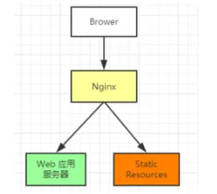
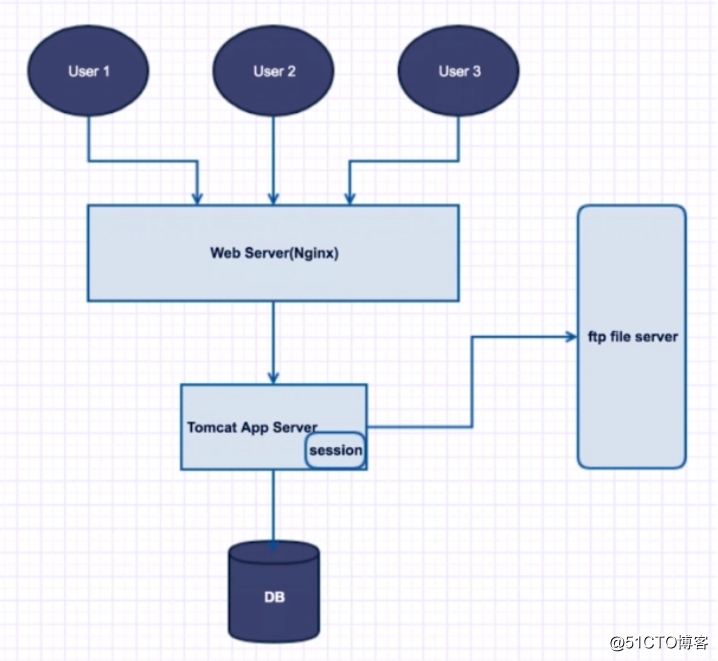
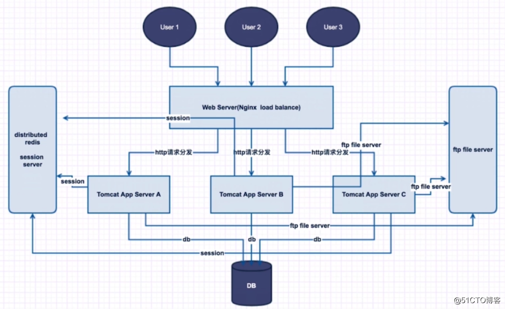
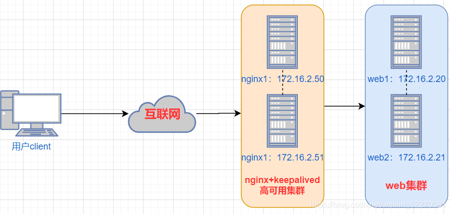
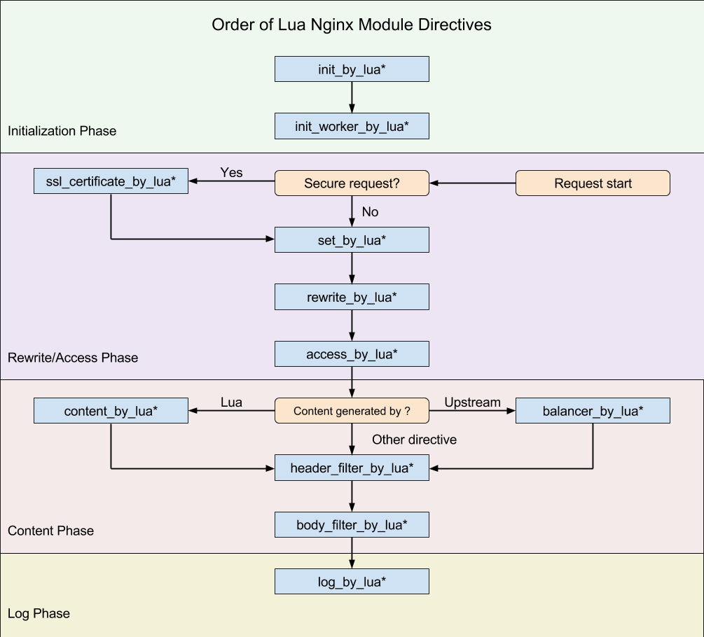

视频：https://www.bilibili.com/video/BV1ov41187bq
Nginxs是一个具有高性能的【HTTP】和【反向代理】的【web服务器】，同时也是一个【POP3/SMTP/IMAP代理服务器】，是 Igor Sysoev使用C语言编写的
Web服务器
静态 web 服务器（static web server）由一个计算机（硬件）和一个 HTTP 服务器（软件）组成。我们称它为“静态”是因为这个服务器把它托管文件的“保持原样”地传送到你的浏览器。
动态 web 服务器（dynamic web server）由一个静态的网络服务器加上额外的软件组成，最普遍的是一个应用服务器和一个数据库。我们称它为“动态”是因为这个应用服务器会在通过 HTTP 服务器把托管文件传送到你的浏览器之前会对这些托管文件进行更新。
HTTP
HTTP 是一种用作获取诸如 HTML 文档这类资源的协议。它是 Web 上进行任何数据交换的基础，同时，也是一种客户端—服务器（client-server）协议，也就是说，请求是由接受方——通常是 Web 浏览器——发起的。完整网页文档通常由文本、布局描述、图片、视频、脚本等资源构成。
POP3/SMTP/IMAP代理服务器
POP3是Post Office Protocol 3的简称，即邮局协议的第3个版本,它规定怎样将个人计算机连接到Internet的邮件服务器和下载电子邮件的电子协议。它是因特网电子邮件的第一个离线协议标准,POP3允许客户从服务器上把邮件存储到本地主机（即自己的计算机）上,同时删除保存在邮件服务器上的邮件，而POP3服务器则是遵循POP3协议的接收邮件服务器，用来接收电子邮件的。
IMAP全称是Internet Mail Access Protocol（交互式邮件存取协议），与POP3一样都是一种邮件获取协议。它的主要作用是邮件客户端（例如iPhone、Foxmail）可以通过这种协议从邮件服务器上获取邮件的信息，下载邮件等。IMAP的功能是各处同步，即在网页、客户端、手持设备上对邮箱的操作，均多向同步。如果一封在网页中打开过的新邮件，在iPad上登录邮箱后，该邮件也是已读状态；一封邮件在iPhone上被彻底删除，在Foxmail登录邮箱后，将找不到该邮件。
SMTP 的全称是“Simple Mail Transfer Protocol”，即简单邮件传输协议。它是一组用于从源地址到目的地址传输邮件的规范，通过它来控制邮件的中转方式。SMTP 协议属于 TCP/IP 协议簇，它帮助每台计算机在发送或中转信件时找到下一个目的地。SMTP 服务器就是遵循 SMTP 协议的发送邮件服务器。
速度快，并发更高 单次请求或高并发请求的环境下，nginx都会比其他web服务器相应的速度更加快。
配置简单，扩展性强 Nginx极具扩展性，它本身就是由很多个模块构成的，这些模块的使用可以通过配置文件的配置来进行添加。这些模块由官方或第三方提供。如有需要，完全可以开发自己业务需要的模块
高可靠性 Nginx采用的是多线程模式运行，其中有一个master主进程和N个worker进程，worker的数量可以手动设置，每个worker之间都是独立提供服务的，master可以在一个worker运行出错时，快速拉起新的worker进程提供服务
热部署 互联网项目要求7*24小时进行服务提供，Nginx提供了热部署功能，在不停止Nginx的情况下，对Nginx进行文件升级，更新配置，更改日志等操作
成本低，BSD许可证 BSD是一个开源的许可证，世界上由许多开源许可证。 目前较为流行的许可证：GPL，BSD，MIT，Mozilla，Apache，LGPL
Nginx提供的基本功能服务从大体上归纳为“基本HTTP服务”、“高级HTTP服务”和"邮件服务"等三大类。
基本HTTP服务 Nginx可以提供基本HTTP服务，可以作为HTTP代理服务器和反向代理服务器，支持通过缓存加速访问，可以完成简单的负载均衡和容错，支持包过滤功能，支持SSL等。
处理静态文件、处理索引文件以及支持自动索引；
提供反向代理服务器，并可以使用缓存加上反向代理，同时完成负载均衡和容错；
提供对FastCGI、memcached等服务的缓存机制，同时完成负载均衡和容错；
使用Nginx的模块化特性提供过滤器功能。Nginx基本过滤器包括gzip压缩、ranges支持、chunked响应、XSLT、SSI以及图像缩放等。其中针对包含多个SSI的页面，经由FastCGI或反向代理，SSI过滤器可以并行处理。
支持HTTP下的安全套接层安全协议SSL
支持基于加权和依赖的优先权的HTTP/2高级HTTP服务
高级HTTP服务
支持基于名字和IP的虚拟主机设置
支持HTTP/1.0中的KEEP-Alive模式和管线(PipeLined)模型连接
自定义访问日志格式、带缓存的日志写操作以及快速日志轮转。
提供3xx～5xx错误代码重定向功能
支持重写（Rewrite）模块扩展
支持重新加载配置以及在线升级时无需中断正在处理的请求
支持网络监控
支持FLV和MP4流媒体传输
邮件服务
Nginx提供邮件代理服务也是其基本开发需求之一，主要包含以下特性：
支持IMPA/POP3代理服务功能
支持内部SMTP代理服务功能
常用的功能模块
静态资源部署
Rewrite地址重写——正则表达式
反向代理
负载均衡——轮询，加权轮询，ip_hash，url_hash、fair
web缓存
环境部署——搭建高可用环境
用户认证模块
Nginx的核心组成
Nginx——二进制可执行文件
Nginx.conf——配置文件
error.log——错误的日志记录
access.log——访问日志记录
Nginx官网：https://nginx.org/
nginx文档：nginx documentation
准备linux系统
下载源码包（稳定版Stable version）
通过源码安装
准备工作 GCC编译器
1yum install -y gcc //安装2gcc --version //查看是否安装成功
PCRE
xxxxxxxxxx21yum install -y pcre pcre-devel //安装2rpm -qa pcre pcre-devel //查看是否安装成功
zlib
xxxxxxxxxx21yum install -y zlib zlib-devel //安装2rpm -qa zlib zlib-devel //查看是否安装成功
OpenSSL
xxxxxxxxxx21yum install -y openssl openssl-devel //安装2rpm -qa pcre openssl openssl-devel //查看是否安装成功
xxxxxxxxxx21yum install -y gcc pcre pcre-devel zlib zlib-devel openssl opensell-devel2//一次全部安装
源代码简单安装
下载源码
xxxxxxxxxx11wget https://nginx.org/download/nginx-1.26.1.tar.gz
解压缩
xxxxxxxxxx11tar -xzf nginx-1.26.1.tar.gz
进入资源文件进行简单配置
xxxxxxxxxx11./configure
编译
xxxxxxxxxx11make
安装
xxxxxxxxxx11make install
源代码复杂安装
这种安装方式通过 ./configure 来对编译参数进行设置，需要我们进行手动指定
PATH:是和路径相关的配置信息
with:是启动模块，默认是关闭的
without:是关闭模块，默认是开启的
–prefix=PATH 指向Nginx的安装目录，默认值为/usr/local/nginx
–sbin-path=PATH 指向(执行)程序文件(nginx)的路径,默认值为<prefix>/sbin/nginx
–modules-path=PATH
指向Nginx动态模块安装目录，默认值为<prefix>/modules
–conf-path=PATH 指向配置文件(nginx.conf)的路径,默认值为<prefix>/conf/nginx.conf
–error-log-path=PATH 指向错误日志文件的路径,默认值为<prefix>/logs/error.log
–http-log-path=PATH 指向访问日志文件的路径,默认值为<prefix>/logs/access.log
–pid-path=PATH 指向Nginx启动后进行ID的文件路径，默认值为<prefix>/logs/nginx.pid
–lock-path=PATHcd
指向Nginx锁文件的存放路径,默认值为<prefix>/logs/nginx.lock
通过yum安装
安装yum-utils
xxxxxxxxxx11sudo yum install yum-utils
配置文件nginx.repo
xxxxxxxxxx11vim /etc/yum.repos.d/nginx.repo
输入下面内容
xxxxxxxxxx151[nginx-stable]2name=nginx stable repo3baseurl=http://nginx.org/packages/centos/$releasever/$basearch/4gpgcheck=15enabled=16gpgkey=https://nginx.org/keys/nginx_signing.key7module_hotfixes=true8[nginx-mainline]10name=nginx mainline repo11baseurl=http://nginx.org/packages/mainline/centos/$releasever/$basearch/12gpgcheck=113enabled=014gpgkey=https://nginx.org/keys/nginx_signing.key15module_hotfixes=true
yum在线安装
xxxxxxxxxx11sudo yum install -y nginx
查找nginx安装位置
xxxxxxxxxx11whereis nginx
关闭nginx进程
xxxxxxxxxx11./nginx -s stop
将nginx删除
xxxxxxxxxx11rm -rf /usr/local/nginx
清除编译的环境
xxxxxxxxxx11make clean
Nginx服务的信号控制
xxxxxxxxxx41//解除nginx列出当前系统中正在运行的进程信息。2ps -ef | grep nginx3//发送信号4kill-QUIT '进程ID'
信号
| 信号 | 作用 |
|---|---|
| TERM/INT | 立即关闭整个服务 |
| QUIT | 关闭整个服务（处理完当前请求后关闭） |
| HUP | 重读配置文件并使用服务对新配置项生效 |
| USR1 | 重新打开日志文件，可用来进行日志切割 |
| USR2 | 平滑升级到最新的nginx |
| WINCH | 所有子进程不再接受处理新连接，相当于关闭work进程 |
调用命令：kill -signal(信号) PID(进程id)
nginx的命令行控制 通过nginx安装目录的sbin下的nginx控制
xxxxxxxxxx121相关设置2Options:3-?,-h : this help // 显示该帮助信息4-v : show version and exit // 打印版本号并退出5-V : show version and configure options then exit // 打印版本号和配置并退出6-t : test configuration and exit // 测试配置正确性并退出7-T : test configuration, dump it and exit // 测试配置正确性，转储它并退出 ??8-q : suppress non-error messages during configuration testing // 测试配置时只显示错误9-s signal : send signal to a master process: stop, quit, reopen, reload // 向主进程发送信号10-p prefix : set prefix path (default: /Nginx/) // 指定Nginx 服务器路径前缀11-c filename : set configuration file (default: conf/nginx.conf) // 指定 Nginx 配置文件路径12-g directives : set global directives out of configuration file // 指定 Nginx 附加配置文件路径
使用Nginx服务信号进行版本升级
进入旧版本的Nginx目录，对Nginx可执行文件进行备份，防止升级失败，便于版本回退
xxxxxxxxxx21cd /usr/local/nginx/sbin2mv nginx nginxold
切换到新版本目录，进行编译，将新版本编译后的objs下的nginx文件拷贝到原安装目录下的sbin目录中
xxxxxxxxxx11cp nginx /usr/local/nginx/sbin
发信号USR2给正在运行的旧版本Nginx的master进程
xxxxxxxxxx11kill -USR2 进程号
发信号QUIT给正在运行的旧版本Nginx的master进程
xxxxxxxxxx11kill -quit 旧进程号
使用Nginx安装目录下的make命令进行升级
进入旧版本的Nginx目录，对Nginx可执行文件进行备份，防止升级失败，便于版本回退
切换到新版本目录，进行编译，将新版本编译后的objs下的nginx文件拷贝到原安装目录下的sbin目录中
进入安装目录，执行make upgrade
查看是否
xxxxxxxxxx11./nginx -v
全局配置块
events块
http块 一个http块中可以配置多个server块 一个server块中又可以配置多个location块
user指令：用于配置运行Nginx服务器的worker进程的用户和用户组
| 语法 | user username [group] |
|---|---|
| 默认值 | nobody |
| 位置 | 全局块 |
当访问权限不足时，网页会报403错误
master_process：用来指定是否开启工作进程
| 语法 | master_process on/off |
|---|---|
| 默认值 | on |
| 位置 | 全局块 |
worker_orpcesses值设置与CPU内核数相同
| 语法 | worker_orpcesses 数/auto (指定个数/自动) |
|---|---|
| 默认值 | 1 |
| 位置 | 全局块 |
deamon 设置nginx是否以守护进程的方式启动
| 语法 | deamon on/off |
|---|---|
| 默认值 | on |
| 位置 | 全局块 |
pid ：用来配置Nginx当前master进程的进程号id存储路径
| 语法 | pid file路径 |
|---|---|
| 默认值 | 安装目录下的logs/nginx.pid |
| 位置 | 全局块 |
error_log 配置nginx错误日志存放的路径
| 语法 | error_log file路径[日志级别] |
|---|---|
| 默认值 | 安装目录下的logs/error.log |
| 位置 | 全局块、HTTP，server、location |
include 用来引入其他配置文件，使nginx的配置更加灵活
| 语法 | include file路径 |
|---|---|
| 默认值 | 无 |
| 位置 | any |
在nginx.conf里使用nginx file可以引入其他的配置文件
accept_mutex：用来配置nginx网络连接序列化
| 语法 | accept_mutex on/off |
|---|---|
| 默认值 | on |
| 位置 | events块 |
这个配置主要是用来解决‘惊群’问题，客户端发来一个请求连接，nginx后台是以多进程的工作模式（多个worker进程），多个进程会同时被唤醒，但始终是有一个获取连接，如果唤醒的进程太多，就会影响到Nginx的性能。若开启网络连接序列化，将对这多个进程进行序列化，一个一个按顺序唤醒和就收，防止多个进程对连接的争抢。
multi_accept：是否允许同时接受多个网络连接
| 语法 | multi_accept on/off |
|---|---|
| 默认值 | off |
| 位置 | events块 |
worker_connections：配置单个worker进程的最大连接数
| 语法 | worker_connections number |
|---|---|
| 默认值 | 1024 |
| 位置 | events块 |
use：设置服务器选择哪种事件驱动来处理网络消息
| 语法 | use method |
|---|---|
| 默认值 | 根据系统指定 |
| 位置 | events块 |
这个选择事件处理模型是nginx优化的重要内容 method的可选值：select、poll、epoll、kqueue linux内核在2.6以上，才能使用epoll
MIME-Type是网络资源的媒体类型。nginx作为web服务器，也需要能够识别前端请求的资源类型
在Nginx的配置文件中的两行默认配置
xxxxxxxxxx21include mime.types; //mime.types记录的是mimt类型与相关类型文件的文件后缀名的关系2default_type application/octet-stream
default_type：用来设置nginx响应前端请求的默认mime类型
| 语法 | default_type type |
|---|---|
| 默认值 | text/plain |
| 位置 | http、server、location |
Nginx中的日志类型分为access.log和error.log日志 access.log：记录用户的所有访问请求 error.log：记录nginx运行的错误信息 nginx服务器支持对日志的格式，大小，输出等进行设置，需要使用以下两个指令
access_log 设置用户访问日志的相关数据
| 语法 | access_log path路径[format输出格式][buffer=size文件大小] |
|---|---|
| 默认值 | access_log logs/access.log combined |
| 位置 | http、server、location |
log_format 设置日志的输出格式
| 语法 | log_format name [escap=default|json|none...] string...; |
|---|---|
| 默认值 | log_format combined '...' |
| 位置 | http |
sendfile：设置nginx服务器是否使用sendfile()传输文件，该属性可以大大提高nginx处理静态资源的性能
| 语法 | sendfile on/off |
|---|---|
| 默认值 | off |
| 位置 | http、server、location |
keeplive_timeout：设置长连接的超时时间
HTTP是一种无状态协议，客户端向服务端发送一个TCP请求，服务端响应完成后断开连接
如果客户端向服务端发送了多个请求，每个请求都要重新建立一次连接，效率和性能较低，使用keeplive模式，可以告诉服务端，完成一个请求后，保持这个tcp请求打开状态，若列收到这个客户端的其他请求，就利用这个未关闭的连接，不需要再次建立一个新的连接，提升效率，但是这个连接也不能一直保持下去，会严重影响服务端的性能，所以就要设置超时时间。
| 语法 | keeplive_timeout time |
|---|---|
| 默认值 | 75秒 |
| 位置 | http、server、location |
keeplive_requests：设置一个连接使用的最大次数
| 语法 | keeplive_requests number |
|---|---|
| 默认值 | 100 |
| 位置 | http、server、location |
listen：监听的端口
server_name：服务名，可以是localhost 可以是IP或者域名
name可以提供多个，中间使用空格分割。
默认值为：“”;
xxxxxxxxxx41server_name配置方式有以下三种：2精确匹配3通配符匹配4正则表达式匹配
配置方法一：精确匹配
xxxxxxxxxx51server{2listen 80;3server_name www.baidu.com 域名1 域名2 域名3;4...5}
配置方法二：通配符匹配
xxxxxxxxxx81# server_name中支持使用通配符进行匹配，注意！通配符不能出现在中间，只能出现在首尾2server{3listen 80;4server_name *.baidu.com www.baidu.*;5# 下面的写法会报错6server_name www.*.com www.*.cn;7...8}
配置方法三：正则表达式匹配
xxxxxxxxxx91# server_name中，可以使用正则表达式，并且使用 ~ 作为正则表达式字符串的开始标记2server{3listen 80;4server_name ~^WWW\.(\W+)\.COM$;5# 可以使用括号，下面获取括号中的值6default_type text/plain;7return 200 $1;8...9}
常见的正则表达式
| 代码 | 说明 |
|---|---|
| ^ | 匹配搜索字符串开始的位置 |
| & | 匹配搜索字符串结束的位置 |
| . | 匹配除了换行符”\n“以外的任何单个字符 |
| \ | 转义字符，将下一个字符标记为特殊字符 |
| [xyz] | 字符集，与任意一个指定字符匹配 |
| [a-z] | 字符范围，匹配指定范围内的任何字符 |
| \w | 与以下任意字符匹配: A-Z a-z 0-9 下划线，等同于[A-Za-z0-9_] |
| \d | 数字字符匹配，等同于：[0-9] |
| {n} | 正好匹配n次 |
| {n,} | 至少匹配n次 |
| {n,m} | 至少匹配n次，至多匹配m次 |
| * | 零次或多次，等同于：{0,} |
| + | 一次或多此，等同于：{1,} |
| ? | 零次或一次，等同于：{0,1} |
三种匹配方式的匹配执行顺序
xxxxxxxxxx511：精确匹配22：通配符在开始33：通配符在结束44：正则表达式55：默认deault_server
location用来设置请求的URI
xxxxxxxxxx31语法：location [= | ~ | ~* | ^~ |@] uri{...}2默认值：-3位置：server,location
uri变量是待匹配的请求字符串，可以不包含正则表达式，也可以包含正则表达式。那么bginx服务器在搜索匹配location时，是先使用不包含正则表达式的进行匹配，找到一个匹配度最高的一个。然后再通过包含正则表达式的进行匹配，如果能匹配到直接访问，如果能匹配到直接访问，如果匹配不到，才使用匹配度最高的的那个location进行处理请求。
属性介绍
不带符号。必须以指定模式开始
xxxxxxxxxx81server{2listen 80;3...4location /abc{#以/abc开头的都可以访问到这个资源5...6}7...8}
=：用于不包含正则表达式的uri前，必须与指定的模式精确匹配。
xxxxxxxxxx81server{2listen 80;3...4location =/abc{#只有/abc可以访问到这个资源5...6}7...8}
~：用于表示当前uri中包含了正则表达式，且区分大小写 ~*：用于表示当前uri中包含了正则表达式，且不区分大小写
xxxxxxxxxx181server{2listen 80;3...4location ~^/abc\w$ {5...6}7...8}9#-------------11server{12listen 80;13...14location ~*^/abc\w$ {15...16}17...18}
^~：用于不包含正则表达式的uri前，功能和不加符号的一致，唯一不同的是，如果模式匹配，那么就停止搜索其他模式。
xxxxxxxxxx81server{2listen 80;3...4location ^~/abc {5...6}7...8}
root：设置请求的根目录
xxxxxxxxxx51语法：root path2默认值： root html;3位置：http server location4# path:是nginx服务器收到请求后，查找资源根目录的路径
alias：用来更来location的URI
xxxxxxxxxx31语法：alias path;2默认值：-3位置：location
root和alias的区别：
xxxxxxxxxx21root处理结果为：root路径+location路径2alias处理结果为：使用alias路径替换location
例如：使用以下地址访问指定资源
xxxxxxxxxx11地址/imgs/abc.png
可以使用以下配置
xxxxxxxxxx71location /imgs{2root html;3}4# 或5location /imgs{6alias html/imgs;7}
index：设置网站的默认首页。
xxxxxxxxxx31语法：index file ...;2默认值：index index.html;3位置：http,server,location
index后可以跟多个设置，在访问的时候，如没有指定具体的访问资源，则会进行查找，找到第一个为止
xxxxxxxxxx51location /{2root xxx;3index index.html index.htm;4}5# 访问该location时，可以通过http://xxxxx/,地址后面如果比添加任何内容，默认依次访问index.html index.htm，找到第一个来进行返回。
error_page：设置网站的错误页面。
xxxxxxxxxx31语法：error_page code(错误码) ... [=[response]] uri;2默认值：-3位置：http,server,location
当出现对应的相应code后，如何来处理。
=[response]的作用是用来将相应代码更改为另一个。
xxxxxxxxxx11error_page 404 =200 /50x.html;
例如：
跳转到指定地址。
xxxxxxxxxx31server {2error_page 404 http://shuzilearn.cn;3}
指定重定向地址
xxxxxxxxxx71server {2error_page 404 /50x.html;3error_page 500 502 503 504 /50x.html;4location =/50x.html{5root html;6}7}
使用location的@完成错误信息展示
xxxxxxxxxx71server {2error_page 404 @jump_to_error;3location @jump_to_error {4default_type text/plain;5return 404 "Not Found Page...";6}7}
nginx对静态资源进行优化，可以从下面的三个属性配置进行优化。
xxxxxxxxxx31sendfile on;2tcp_nopush on;3tcp_nodelay on;
sendfile，用来开启高效的文件传输模式。
xxxxxxxxxx31语法 sendfile on|off;2默认值 sendfile off;3位置 http,server,lication
请求静态资源的过程：客户端通过网络接口向服务端发送请求，操作系统将这些请求传递到服务端应用程序。服务端应用程序会处理这些请求，请求处理完成后，操作系统还需要将处理得到的结果通过网络传递回去
tcp_nopush，该指令必须在sendfile开启的状态下才能生效，主要用来提升网卡的传输“效率”。
xxxxxxxxxx31语法：tcp_nopush on|off2默认值：tcp_nopush off;3位置：http,server,lication
tcp_nodelay，该指令必须在keep-alive连接开启的状态下才生效，用来提高网络包传输的“时效性”。
xxxxxxxxxx31语法：tcp_nodelay on|off;2默认值：tcp_nodelay on;3位置：http,server,lication
下面的指令都是ngx_http_gzip_module模块，该模块会在nginx安装的时候内置在nginx的安装环境中，我们可以直接使用这些指令
gzip指令：该指令用于开启或关闭gzip功能。
xxxxxxxxxx31语法：gzip on|off;2默认值：gzip off;3位置：http,server,lication
注意：该指令只有在打开时，下面的指令才有效果。
xxxxxxxxxx31http{2gzip on;3}
gzip_types指令：该指令可以根据响应页的MIME类型选择性的开启Gzip压缩功能。
xxxxxxxxxx31语法：gzip_tyoes mine-type...;2默认值：gzip_types text/html;3位置：http,server,lication
所选择的值可以从mime.types文件中进行查找，也可以使用 “*” 代表所有（生产环境中不建议使用）
xxxxxxxxxx31http{2gzip_types application/javascript;3}
gzip_comp_level指令：该指令用于设置Gzip压缩程度，等级从1-9，等级越高，压缩程度越高，效率越低。
xxxxxxxxxx31语法：gzip_comp_level level;2默认值：gzip_comp_level 1;3位置：http,server,lication
例如：
xxxxxxxxxx31http{2gzip_comp_level 6;3}
gzip_vary指令：该指令用于设置使用Gzip进行压缩发生是否携带“Vary:Accept-Encoding”头域的响应头部。主要告诉接收方，所发送的数据经过了Gzip压缩处理。
xxxxxxxxxx31语法：gzip_vary on|off;2默认值：gzip_vary off;3位置：http,server,lication
gzip_buffer指令：该指令用来设置缓冲区的数量和大小。
xxxxxxxxxx31语法：gzip_buffer number size;2默认值：gzip_buffer 32 4k|16 8k;3位置：http,server,lication
number：指定nginx服务器向系统中申请缓存空间的个数。
size：指的是每个缓存空间的大小。
主要实现的是number个size大小的内存空间。这个值的设定一般会和服务器的操作系统有关。所以一般不建议设置，使用默认值即可。
gzip_disable指令：针对不同客户端发起的请求，可以选择性地开启或关闭Gzip功能。
xxxxxxxxxx31语法：gzip_disable regex...;2默认值：-;3位置：http,server,lication
regex：根据客户端的浏览器标志（user-agent）来设置。支持使用正则表达式，指定的浏览器标志不使用Gzip，该指令一般用来排除一些明显不支持Gzip的浏览器
xxxxxxxxxx11gzip_disable "MSIE [1-6]\.";
gzip_http_version指令：针对不同的HTTP协议版本，可以选择性地开启或关闭Gzip功能。
xxxxxxxxxx31语法：gzip_http_version 1.0|1.1;2默认值：gzip_http_version 1.1;3位置：http,server,lication
这个属性一般不做设置，使用默认即可。
gzip_min_length指令：该指令针对数据传输大小，可以选择性的开启或关闭Gzip功能。
xxxxxxxxxx31语法：gzip_min_length length;2默认值：gzip_min_length 20;3位置：http,server,lication
xxxxxxxxxx21nginx计量单位：bytes[字节]/kb[千字节]/M[兆]2如:1024/10k/10m
Gzip压缩功能对大数据的压缩效果比较明显。但是要压缩比较小的数据，可能会出现越压缩数据越大的情况，因此，我们需要根据相应内容的大小来决定是否使用Gzip压缩功能，相应页面的大小，可以从头信息中的Content-Length来获取。但是如果使用了Chunk编码动态压缩，这个指令将被忽略。
建议设置为1k以上。
gzip_proxied指令：该指令设置是否对服务端返回的结果进行压缩。
xxxxxxxxxx31语法: gzip_proxied off | expired | no-cache | no-store | private | no_last_modified | no_etag | auth | any ...;2默认值: gzip_proxied off;3位置: http, server, location
off：关闭Nginx服务器对后台服务器返回结果的Gzip压缩
expired：启用压缩，如果header头中包含“Expires"头信息
no-cache：启用压缩，如果header头中包含"Cache-Control:no-cache”头信息
no-store：启用压缩，如果header头中包含"Cache-Control:no-store”头信息
private：启用压缩，如果header头中包含"Cache-Control:private"头信息
no_last_modified：启用压缩，如果header头中不包含"Last-Modified"头信息
no_etag：启用压缩，如果header头中不包含“ETag”头信息
auth：启用压缩，如果header头中包含"Authorization"头信息
any：无条件启用压缩
Gzip和sendfile共存问题
当开启sendfile后，读取磁盘上的静态资源文件的时候，可以减少拷贝的次数。可以不经过用户进程，将静态文件通过网络发送。但Gzip需要对资源进行压缩，需要经过用户进程的操作，所以需要解决这两个的共存问题。
可以使用ngx_http_gzip_static_module模块的gzip相关的header返回.gz文件的内容；
xxxxxxxxxx31语法：gzip static on|off|always;2默认值：gzip static off;3位置: http, server, location
nginx默认没有ngx_http_gzip_static_module模块，需要手动进行添加。
手动添加模块的方法
查询当前安装的nginx配置参数
xxxxxxxxxx11nginx -v
将nginx安装目录下sbin目录中的nginx二进制文件更名(备份)
xxxxxxxxxx21cd /xxxxx2mv nginx nginxold
进入nginx安装目录
执行make clean清理之前的编译内容
xxxxxxxxxx11make clean
使用configure来配置参数
xxxxxxxxxx11./configure --with-http_gzip_static_module
使用make命令进行编译
xxxxxxxxxx11make
在obj目录下会生成一个nginx二进制可执行文件，将其移动到nginx安装目录下的sbin目录中
xxxxxxxxxx11mv objs/nginx xxxxxxx
执行更新命令
xxxxxxxxxx11make upgrade
什么是缓存？
xxxxxxxxxx11缓存（cache），原始意义是指访问速度比一般随机存取存储器（RAM）快的一种高速存储器，通常它不像系统主存那样使用DRAM技术，而使用昂贵但较快速的SRAM技术。缓存的设置是所有现代计算机系统发挥高性能的重要因素之一。
什么是web缓存
xxxxxxxxxx11web缓存是指一个web资源（如html页面，图片，js，数据等）存在于web服务器和客户端（浏览器）之间的副本。缓存会根据进来的请求保存输出内容的副本；当下一个请求来到的时候，如果是相同的URL，缓存会根据缓存机制决定是直接使用副本响应访问请求，还是尚源服务器再次发送请求。比较常见的就是浏览器会缓存访问过网站的网页，当再次访问这个URL地址的时候，如果网页没有更新，就不会再次下载网页，而是直接使用本地缓存的网页。只有当网站明确标识资源已经更新，浏览器才会再次下载网页
web缓存的分类
xxxxxxxxxx41客户端缓存2浏览器缓存3服务端缓存4nginx / redis / memcached等
浏览器缓存
xxxxxxxxxx11是为了节约网络的资源加速浏览，浏览器在用户磁盘上对最近请求过的文档进行存储，当访问者再次请求这个页面时，浏览器就可以从本地磁盘显示文档，这样就可以加速页面的阅览.
为什么使用浏览器缓存？
xxxxxxxxxx41成本最低的一种缓存实现2减少网络带宽消耗3降低服务器压力4减少网络延迟，加快页面打开的速度。
浏览器缓存的执行流程
在HTTP协议中和页面缓存相关的字段。
| header | 说明 |
|---|---|
| Expires | 缓存过期的日期和时间 |
| Cache-Control | 设置和缓存相关的配置信息 |
| Last-Modified | 请求资源最后修改时间 |
| ETag | 请求变量的实体标签的当前值，如：文件的MD5值 |
expires指令
该指令用来控制缓存页面的作用，可以通过该指令控制HTTP应答中的“Expires”和“Cache-Control”
xxxxxxxxxx41语法：expires [modified] time2expires epoch | max | off;3默认值：expires off;4位置： http, server, location
time：可以整数也可以是负数，指定过期时间，如果是负数，Cache-Control则为no- cache,如果为整数或o，则Cache-Control的值为max-age=time;
epoch:指定Expires的值为*1January,1970,00:00:01GMT(1970-01-01 00:00:00), Cache-Control的值no-cache
max:指定Expires的值为31December203723:59:59GMT'（2037-12-3123:59:59)， Cache-Control的值为10年
off:默认不缓存
add_header指令
该指令用来添加指定的响应头和响应值。
xxxxxxxxxx31语法：add_header name value [always];2默认值：—3位置： http, server, location
Cache-Control作为响应头信息，可以设置以下值
| 值 | 说明 |
|---|---|
| must-revalidate | 可缓存但必须再向源服务器进行确认 |
| no-cache | 缓存前必须确认其有效性 |
| no-store | 不缓存请求或响应的任何内容 |
| no-transform | 代理不可更改媒体类型 |
| public | 可向任意方提供响应的缓存 |
| private | 仅向特定用户返回响应 |
| prxy-revalidate | 要求中间缓存服务器对缓存的响应有效性在进行确认 |
| max-age=<秒> | 响应最大Age值 |
| s-maxage=<秒> | 公共缓存服务器的最大Age值 |
同源策略
浏览器的同源策略：是一种约定，是浏览器最核心也是最基本的安全功能。如果浏览器少了同源策略，浏览器的正常功能都会受到影响。
同源：协议、域名、端口相同即为同源
跨域问题
xxxxxxxxxx21跨域问题描述2有两台服务器A和B，如果从服务器A的页面发送异步请求到服务器B获取数据，如果服务器A和B不满足同源策略，就会出现跨域问题。
解决方案
使用add_header指令，添加头部信息
xxxxxxxxxx31语法：add_header name value...;2默认值：—3位置：http, server, location
在此处用来解决跨域问题，添加两个头部信息，一个是Access-Control-Allow-Origin,Access-Contro-Allow-Methods
Access-Control-Allow-Origin：允许跨域访问的源地址信息，可以配置多个（使用逗号分割），也可以使用*代表所有源。
Access-Contro-Allow-Methods：允许跨域访问的请求方式，可以是：GET,POST,PUT,DELETE...,可以全部设置，也可以根据需要进行设置，多个使用逗号分割。
xxxxxxxxxx51location /getabc{2add_header Access-Control-Allow-Origin *;3add_header Access-Contro-Allow-Methods GET,POST,PUT,DELETE;4...CODE...5}
什么是资源盗链？
资源盗链指的是此内容不在自己的服务器上，通过技术是手段绕过别人的限制，将别人的资源放在自己的页面上展示给用户。以此来盗取网站的空间和流量。
valid_referers指令: nginx会通过查看referer字段和valid_referers后面的内容进行匹配，如果匹配到了就将$valid_referers变量置为0，如果没有匹配到，就将$valid_referers置为1，匹配过程不区分大小写。
xxxxxxxxxx31语法：valid_referers none | blocked | server_names | string...2默认值：-3位置：server,location
none：如果header中的Referer为空，允许访问。
blocked：如果header中的Referer不为空，但是该值被防火墙或者代理伪装过，如不带http://、https:// 等协议头的资源允许访问。
server_name：指定具体域名或IP
String：可以支持正则表达式和*的字符串，如果是正则表达式，需要以~开头。
xxxxxxxxxx91location ~*\.(png|jpg|gif){2valid_referers none blocked ww.baidu.com3192.168.200.222 *.example.com example.* www.example.org4~\.google\.;5if（sinvalid_referer){6return 403;7}8root /usr/1ocal/nginx/html;9}
问题：Referer的限制比较粗，比如随意加一个Referer，上面的方法是无法进行限制的。所以，需要使用Nginx的第三方模块ngx_http_accesskey_module。
Rewrite是Nginx服务器提供的一个重要功能，是Web服务器产品在几乎必备的功能，主要作用是实现URL重写。
注意：Nginx服务器是Rewrite功能的实现依赖于PCRE的支持，因此在编译安装Nginx之前，需要安装PCRE库。Nginx使用的是ngx_http_rewrite_module模块来解析和处理Rewrite功能的相关配置。
Rewrite的相关指令
xxxxxxxxxx61set2if3break4return5rewrite6rewrite_log
Rewrite的应用场景
xxxxxxxxxx51域名跳转2域名镜像3独立域名4目录自动添加"/"5合并目录
该指令用来设置一个新的变量
xxxxxxxxxx31语法：set $variable value;2默认值：-3位置：server,location,if
variable：变量名称，该变量名要用$作为变量的第一个字符，且不要与Nginx服务器预设的全局变量同名
value：变量的值，可以是字符串，其他变量，或者变量的组合。
xxxxxxxxxx61location /server {2set $name zhangsan;3set $age 18;4default_type text/plain;5return 200 $name=$age;6}
Rewrite常用全局变量
| 变量 | 说明 |
|---|---|
| $args | 变量中存放了请求URL中的请求参数。比如http://192.168.200.133/server?arg1=value1&args2=value2中 的"arg1=value1&arg2=value2"，功能和$query_string一样。 |
| $http_user_agent | 变量存储的是用户访问服务的代理信息(如果通过浏览器访问，记录的是浏览器的相关版本信息) |
| $host | 变量存储的是访问服务器的server_name值 |
| $document_uri | 变量存储的是当前访问地址的URI。比如http://192.168.200.133/server?id=10&name=zhangsan中的"/server"，功能和$uri一样 |
| $document_root | 变量存储的是当前请求对应location的root值，如果未设置，默认指向Nginx自带html目录所在位置 |
| $content_length | 变量存储的是请求头中的Content-Length的值 |
| $content_type | 变量存储的是请求头中的Content-Type的值 |
| $http_cookie | 变量存储的是客户端的cookie信息，可以通过add_header Set-Cookie'cookieName=cookieValue'来添加cookie数据 |
| $limit_rate | 变量中存储的是Nginx服务器对网络连接速率的限制，也就是Nginx配置中对limit_rate指令设置的值，默认是0，不限制。 |
| $remote_addr | 变量中存储的是客户端的IP地址 |
| $remote_port | 变量中存储了客户端与服务端建立连接的端口号 |
| $remote_user | 变量中存储了客户端的用户名，需要有认证模块才能获取 |
| $scheme | 变量中存储了访问协议 |
| $server_addr | 变量中存储了服务端的地址 |
| $server_name | 变量中存储了客户端请求到达的服务器的名称 |
| $server_port | 变量中存储了客户端请求到达服务器的端口号 |
| $server_protocol | 变量中存储了客户端请求协议的版本，比如"HTTP/1.1" |
| $request_body_file | 变量中存储了发给后端服务器的本地文件资源的名称 |
| $request_method | 变量中存储了客户端的请求方式，比如"GET","POST"等 |
| $request_filename | 变量中存储了当前请求的资源文件的路径名 |
| $request_uri | 变量中存储了当前请求的URI，并且携带请求参数，比如http://192.168.200.133/server?id=10&name=zhangsan中的"/server?id=10&name=zhangsan" |
该指令用来进行条件判断，并根据条件判断的结果选择不同的Nginx配置
xxxxxxxxxx31语法：if (condition){...}2默认值：-3位置：service，location
condition为判断条件，可以使用以下几种写法
变量名。如果变量名对应的值为空字符串或"0"，结果都为else，反之为true。
xxxxxxxxxx31if ($abc){2}
使用”=“或”!=“比较变量与值是否相等
xxxxxxxxxx31if ($request_method = POST){2return 405;3}
注意：与其他编程语言不同的是，这里的字符串不需要加” “，并且等号前后要加空格。
使用正则表达式对变量进行匹配，成功返回true失败返回false，变量与正则表达式之间使用”~“，”~*“，”!~“，”!~*“来连接。 ”~“：代表匹配正则表达式过程中区分大小写 ”~*“：代表匹配正则表达式过程中不区分大小写 ”!~“和”!~*“：刚好和上面取相反值，如果匹配上返回false，反之返回true
xxxxxxxxxx31if ($http_user_agent ~ MSIE){2#$http_user_agent值中是否包含字符串MSIE3}
注意：正则表达式字符串一般不需要加引号，但如果字符串中包含“}”,“;”等符号时，需要加引号。
判断请求的文件是否存在使用“-f”或“!-f”
xxxxxxxxxx61if (-f $request_filename){2# 判断请求的文件是否存在3}4if (!-f $request_filename){5# 判断请求的文件是否不存在6}
判断请求的目录是否存在使用"-d"和"!-d"
判断请求的目录或者文件是否存在使用"-e"和"!-e"
判断请求的文件是否可执行使用"-x"和"!-x"
该指令用于中断当前相同作用域中的其他Nginx配置。与该指令处于同一作用域的Nginx配置中，位于它前面的指令配置生效，位于后面的指令配置无效。并且break还有另外一个功能就是终止当前的匹配并把当前的URI在本location进行重定向访问处理。
xxxxxxxxxx21语法：break;2位置：server,location,if
该指令用于完成请求的处理，直接向客户端返回。在return之后的所有nginx配置都是无效的。
xxxxxxxxxx51语法：return code [text];2return code URL;3return URL;4默认值：-5位置：server,location,if
code：为返回给客户端的HTTP状态代理。可以返回的状态代码为0~999的任意HTTP状态代理
text:为返回给客户端的响应体内容，支持变量的使用
URL：为返回给客户端的URL地址
xxxxxxxxxx41location /testreturn {2default_type text/plain;3return 200 success;4}
该指令通过正则表达式的使用改变URI。可以同时存在一个或多个，按照顺序一次对URL进行匹配处理。
xxxxxxxxxx31语法：rewrite regex replacement [flag];2默认值：-3位置：server,location,if
regex:用来匹配URI的正则表达式
replacement:匹配成功后，用于替换URi中被截取内容的字符串。如果该字符串以"http://"者"https://"开头的，则不会继续向下对URI进行其他处理，而是直接返回重写后的URI给客户端。
xxxxxxxxxx71location /test{2default_type text/plain;3return 200 test_success;4location /demo{5default_type text/plain;6return 200 demo_success;7}
flag：用来设置rewrite对url的处理行为，可选值如下
last:终止继续在本location块中处理接收到的URl，并将此处重写的URI作为一个新的URI，使用各location块进行处理。该标志将重写后的URI重写在server块中执行，为重写后的URl提供了转入到其他location块的机会。
break：将此处重写的URI作为一个新的URI在本块中继续进行处理。该标志将重写后的地址在当前的location块中执行，不会将新的URl转向其他的location块。
redirect：将重写后的URI返回给客户端，状态码为302，指明是临时重定向URI，主要用在replacement变量不是以"http://"或者"https://"开头的情况。
permanent：将重写后的URI返回给客户端，状态码为301，指明是临时重定向URl主要用在replacement变量不是以"http://"或者"https://"开头的情况。
该指令配置是否开启URL重写日志的输出功能。
xxxxxxxxxx31语法：rewrite_log on|off;2默认值：off;3位置：http,server,location,if
开启后，URL重写的相关日志将以notice级别输出到error_log指令配置的日志文件汇总。
xxxxxxxxxx21rewrite_log on;2error_log 1ogs/error.log notice;
效果：当我们访问京东网站时，输入www.jd.com，可以进入对应的网站，当输入www.360buy.com和www.jingdong.com时，也可以跳转到www.jd.com。
示例：
xxxxxxxxxx141server {2listen 80;3server_name www.abc.com;4location /{5default_type text/html;6return 200 '<h1>welcome to abc</h1>';7}8}9server {10listen 80;11server_name www.a.com www.b.com;12# rewrite ^/ www.abc.com13rewrite ^(.*) www.abc.com$114}
镜像网站指定是将一个完全相同的网站分别放置到几台服务器上，并分别使用独立的URL进行访问。其中一台服务器上的网站叫主站，其他的为镜像网站。镜像网站和主站没有太大的区别，可以把镜像网站理解为主站的一个备份节点。可以通过镜像网站提供网站在不同地区的响应速度。镜像网站可以平衡网站的流量负载、可以解决网络宽带限制、封锁等。而我们所说的域名镜像和网站镜像比较类似，上述案例中，将www.itheima.com和www.itheima.cn都能跳转到www.itcast.cn，那么www.itcast.cn我们就可以把它起名叫主域名，其他两个就是我们所说的镜像域名，当然如果我们不想把整个网站做镜像，只想为其中某一个子目录下的资源做镜像，我们可以在location块中配置rewrite功能，比如：
xxxxxxxxxx111server {2listen 80;3server_name www.itheima.cn www.itheima.com;4location /user{5rewrite ^/user(.*)s http://www.itcast.cn$1;6}7location /emp{8default_type text/html;9return 200'<h1>emp_success</h1>';10}11}
一个完整的项目包含多个模块，比如购物网站有商品搜索模块、商品详情模块和购物车 模块等，那么我们如何为每一个模块设置独立的域名。
xxxxxxxxxx41需求：2http://search.itcast.com:81访问商品搜索模块3http://item.itcast.com:82访问商品详情模块4http://cart.itcast.com:83访问商品购物车模块
xxxxxxxxxx151server {2listen 81;3server_name search.itcast.com;4rewrite ^(.*) http://www.itcast.cn/searchs1;5}6server {7listen 82;8server_name item.itcast.com;9rewrite ^(.*)http://www.itcast.cn/item$1;10}11server{12listen 83;13server_name cart.itcast.com;14rewrite ^(.*) http://www.itcast.cn/cart$1;15}
例子：
xxxxxxxxxx71server{2listen 8082;3server_name localhost;4location /dir{5root html;6index index.htm1;7}
在访问服务时，输入xxx/dir和访问xxx/dir/有什么区别？
如果不加”/“，Nginx服务器内部会自动做一个301的重定向，重定向的地址会有一个指令server_name_in_redirecton|off；来决定重定向的地址：
xxxxxxxxxx71如果该指令为on2重定向的地址为：http://server_name:8082/目录名/;3比如上面的配置：4如果位on，访问地址会重定向变成http://localhost:8082，这会导致网站无法被正常访问5如果该指令为off7重定向的地址为：http：//原uRL中的域名：8082/目录名/；
注意！这个参数在Nginx 0.8.48版本前默认值为on，之后版本为off，可以不用设置，如果使用0.8.48以前的版本，可以通过rewrite来解决这个问题。
搜索引|擎优化（SEO）是一种利用搜索引擎的搜索规则来提高目的网站在有关搜索引擎内排名的方式。我们在创建自己的站点时，可以通过很多中方式来有效的提供搜索引擎优化的程度。其中有一项就包含URL的目录层级一般不要超过三层，否则的话不利于搜索引擎的搜索也给客户端的输入带来了负担，但是将所有的文件放在一个目录下又会导致文件资源管理混乱并且访问文件的速度也会随着文件增多而慢下来，这两个问题是相互矛盾的，那么使用rewrite如何解决上述问题？
举例，网站中有一个资源文件的访问路径时/server/11/22/33/44/20.html，也就是说20.html存在于第5级目录下，如果想要访问该资源文件，客户端的URL地址就要写成http://192.168.200.133/server/11/22/33/44/20.html但是这个是非常不利于SEO搜索引擎优化的，同时客户端也不好记.使用rewrite我们可 以进行如下配置：
xxxxxxxxxx101server{2listen 8083;3server_name localhost;4location/server{5root html;6index index.html;7rewrite ^/server-([0-9]+)-([0-9]+)-([0-9]+)-([0-9]+)-([0-9]+)\.html$ /server/$1/$2$/$3/$4/$5.html last;8}9}10
在rewrite中的防盗链和之前将的原理其实都是一样的，只不过通过rewrite可以将防盗链的功能进行完善下，当出现防盗链的情况，我们可以使用rewrite将请求转发到自定义的一张图片和页面，给用户比较好的提示信息。下面我们就通过根据文件类型实现防盗链的一个配置实例：
xxxxxxxxxx81location /images{2root html;3valid_referers none blocked www.baidu.com;4if ($invalid_referer){5#return 403；6rewrite ^/ /images/forbidden.png break;7}8}
Nginx即可以实现正向代理，也可以实现反向代理
正向代理代理的对象是客户端，反向代理代理的是服务端
准备两台服务器
配置服务端的nginx
xxxxxxxxxx141# 在http块配置一下信息2http {3log_format main 'client send request=> clientIP=$remote_addr serverIP=$host'; # 指定日志输出格式4server{5listen 80;6server_name localhost;7access_log /logs/access.log main; # 指定日志存放位置8location {9root html;10index index.html;11}12}13}
配置代理服务器的nginx
xxxxxxxxxx71server {2listen 82;3resolver 8.8.8.8;#这里可以设置DNS服务器的IP用来解析proxy_pass中的域名4location /{5proxy_pass http://$host$request_uri;6}7}
在客户端配置代理服务器
xxxxxxxxxx11控制面板->网络和共享中心->Internet选项->连接->局域网设置->为Lan使用代理服务器->设置好代理服务器的IP和端口
Nginx反向代理模块的指令是由ngx_http_proxy_module模块进行解析，这个模块在安装Nginx时已经被安装Nginx。
反向代理的常用指令
xxxxxxxxxx31proxy_pass2proxy_set_header3proxy_redirect
其他指令可以参考：https://nginx.org/en/docs/stream/ngx_stream_proxy_module.html
这个指令用来设置被代理的服务器地址，可以是主机名称，IP地址+端口号形式
xxxxxxxxxx31语法：proxy_pass URL;2默认值：-3位置：location
URL：要设置的被代理服务器地址，包括传输协议，主机名称/IP地址+端口，URI等
例如：
xxxxxxxxxx41proxy_pass http://www.baidu.com;2proxy_pass http://192.168.1.123/;3# or as a UNIX-domain socket path:4proxy_pass unix:/tmp/stream.socket;
在http://192.168.1.123/;是否需要加”/“？如果添加了”/“，location后的内容就不会被拼接到url后。
该指令用来更改Nginx服务器接收到的客户端的请求头信息，然后将新的请求头发送给代理的服务器。
xxxxxxxxxx41语法：proxy_set_header field value;2默认值：proxy_set_header Host $proxy_host;3proxy_set_header Connection close;4位置：http,server,location
注意！如果想要看到结果，必须在被代理的服务器上来获取添加的头信息。
被代理的服务器
xxxxxxxxxx71server {2listen 8080;3server_name localhost;4default_type text/plain;5return 200 $http_username;6# 获取头信息中的属性： $http_属性名7}
代理服务器
xxxxxxxxxx81server{2listen 8080;3server_name localhost;4location /server{5proxy_pass http://192.168.200.146:8080/;6proxy_set_header username ToM;7}8}
在实际开发中，可以将客户端真实的IP端口等信息发送给服务端
该指令用来重置头信息中的”Location“和”Refresh“的值。
xxxxxxxxxx51语法：proxy_redirect redirect replacement;2proxy_redirect default;3proxy_redirect off;4默认值：proxy_redirect default;5位置：http,server,location
在使用Nginx做反向代理功能时，有时会出现重定向的url不是我们想要的url，这时候就可以使用proxy_redirect进行url重定向设置了。proxy_redirect功能比较强大,其作用是对发送给客户端的URL进行修改！！
在重定向后，服务端的IP地址会暴露在客户端，可以使用proxy_redirect将location值改为代理服务器。
服务端
xxxxxxxxxx61server{2listen 8081;3server_name localhost;4if （!-f $request_filename){5return 302 http://192.168.200.146;6}
代理服务器
xxxxxxxxxx91server{2listen 8081;3server_name localhost;4location /{5proxy_pass http://192.168.200.146:8081/;6proxy_redirect http://192.168.200.146/ http://192.168.200.133/;7}8}9
服务器1，2，3可以是内容一样的，也可以是内容不一样的。
如果内容一样，负载均衡策略进行分发。
如果内容不一样，可以根据用户的请求来分发到不同的服务器。
xxxxxxxxxx141代理服务器2server{3listen 8082;4server_name localhost;5location /server1 {6proxy_pass http://192.168.200.146:9001/;7}8location/server2{9proxy_pass http://192.168.200.146:9002/;10}11location/server3{12proxy_pass http://192.168.200.146:9003/;13}14}
反向代理值：Buffer和cache
Buffer和cache的区别
相同点： 两种方式都是用来提供Io吞吐效率，都是用来提升Nginx代理的性能。
不同点： 缓冲主要用来解决不同设备之间数据传递速度不一致导致的性能低的问题，缓冲中的数据一旦此次操作完成后，就可以删除。
缓存主要是备份，将被代理服务器的数据缓存一份到代理服务器，这样的话，客户端再次获取相同数据的时候，就只需要从代理服务器上获取，效率较高，缓存中的数据可以重复使用，只有满足特定条件才会删除。
该指令用来开启或关闭代理服务器的缓冲区
xxxxxxxxxx31语法：proxy_buffering on|off;2默认值：proxy_buffering on;3位置：http,server,location
该指令用来指定单个连接从代理服务器读取响应的缓存区的个数和大小。
xxxxxxxxxx31语法：proxy_buffers number size;2默认值：proxy_buffers 8 4k|8k;与平台有关3位置：http,server,location
number：缓冲区个数 。
size：单个缓冲区大小。
该指令用来设置从被代理服务器获取的第一部分响应数据的大小。保持与proxy_buffers中的size大小一致即可。也可以小一点。
xxxxxxxxxx31语法：proxy_buffer_size size;2默认值：proxy_buffer_size 4k|8k;与平台有关3位置：http,server,location
用来限制同时处于BUSY状态的缓冲区大小。
xxxxxxxxxx31语法：proxy_busy_buffers_size size;2默认值：proxy_busy_buffers_size 8k|16k;3位置：http,server,location
当缓冲区满后，仍未被Nginx服务器完全接受，响应的数据会被临时存放在磁盘文件上，该指令用来设置文件的路径
xxxxxxxxxx31语法：proxy_temp_path path;2默认值：proxy_temp_path proxy_temp;3位置：http,server,location
注意：path最大设置三层
设置磁盘上缓冲文件的大小
xxxxxxxxxx31语法：proxy_temp_file_write_size size;2默认值：proxy_temp_file_write_size 8k|16k;3位置：http,server,location
通用网站的设置
xxxxxxxxxx41proxy_buffering on;2proxy_buffer_size 4 32k;3proxy_busy_buffers_size 64k;4proxy_temp_file_write_size 64k;
Nginx反向代理如何来提升web服务器的安全？
安全隔离
什么是安全隔离？
通过代理分开了客户端到应用程序服务器端的连接，实现了安全措施。在反向代理之前设置防火墙，仅留一个入口供代理服务器访问。
使用SSL对流量进行加密
HTTPS是一种通过计算机网络进行安全通信的传输协议。它经由HTTP进行通信，利用SSL/TLS建立全通信，加密数据包，确保数据的安全性。
SSL(SecureSocketsLayer)安全套接层
TLS(TransportLayerSecurity)传输层安全
上述这两个是为网络通信提供安全及数据完整性的一种安全协议，TLS和SSL在传输层和应用层对网络连接进行加密。
为什么要使用https: http协议是明文传输数据，存在安全问题，而https是加密传输，相当于http+ss1，并且可以防止流量劫持。
Nginx要想使用SSL，需要满足一个条件即需要添加一个模块--with-http_ss1_module，而该模块在编译的过程中需要OpenSSL的支持。
nginx添加SSL支持
添加--with-http_ss1_module模块
xxxxxxxxxx61将原有/usr/loca1/nginx/sbin/nginx进行备份2拷贝nginx之前的配置信息3在nginx的安装源码进行配置指定对应模块./configure --with-http_ssl_module4通过make模板进行编译5将objs下面的nginx移动到/usr/loca1/nginx/sbin下6在源码目录下执行make upgrade进行升级，这个可以实现不停机添加新模块的功能
展示的是部分指令，更多指令请参阅官方文档。
该指令用来指定服务器开启HTTPS，可以使用 listen 443 ssl，
xxxxxxxxxx31语法：ssl on|off;2默认值：off3位置：http,server
xxxxxxxxxx31server{2listen 443 ssl;# 这种方式用的更多3}
为当前主机指定一个带有PEM格式证书的证书
xxxxxxxxxx31语法：ssl_certificate file2默认值：-3位置：http,server
用来指定PEM secret key文件的路径
xxxxxxxxxx31语法：ssl_certificate_key file2默认值：-3位置：http,server
该指令用来配置SSL会话的缓存
xxxxxxxxxx31语法：ssl_session_cache off|none|[builtin[:size]] [share:name:size];2默认值：ssl_session_cache none;3位置：http,server
off：禁用会话缓存，客户端不得重复使用会话
none：禁止使用会话缓存，客户端可以重复使用，但是并没有在缓存中存储会话参数
builtin：内置OpenSSL缓存，仅在一个工作进程中使用。
shared:所有工作进程之间共享缓存，缓存的相关信息用name和size来指定
开启ssl会话功能后，设置客户端能够反复使用存储在缓存中的会话参数时间。
xxxxxxxxxx31语法：ssl_session_timeout time;2默认值：ssl_session_timeout 5m;3位置：http,server
指出允许的密码，密码指定为OpenSSL支持的格式
xxxxxxxxxx31语法：ssl_ciphers ciphers;2默认值：ssl_ciphers HIGH:!aNULL:!MD5;3位置：http,server
可以使用openssl ciphers查看openssl支持的格式
该指令指定是否服务器密码优先客户端密码。
xxxxxxxxxx31语法：ssl_prefer_server_ciphers on|off;2默认值：ssl_prefer_server_ciphers off;3位置：http,server
如何获取SSL证书？
通过阿里、腾讯等云服务商购买
使用openssl生成证书
xxxxxxxxxx21# 确认openssl安装2openssl version
xxxxxxxxxx81# 生成证书2mkdir /root/cert3cd /root/cert4openss1 genrsa -des3 -out server.key 10245openss1 req -new -key server.key -out server.csr6cp server.key server.key.org7openss] rsa -in server.key.org -out server.key8openss1 x509 -req -days 365 -in server.csr -signkey server.key -out server.crt
xxxxxxxxxx151server{2listen 443 ssl;3server_name localhost;4ssl_certificate server.cert;5ssl_certificate_key server.key;6ssl_session_cache shared:SSL:1m;7ssl_session_timeout 5m;8ssl_ciphers HIGH:!aNULL: !MD5;9ssl_prefer_server_ciphers on;10location/{11root html;12index index.html index.htm;13}14}15
##
负载均衡（Load Balancing） 是一种分配网络或应用流量的技术，用于在多台服务器之间均匀分配工作负载，从而提高应用的可用性、可靠性和扩展性。其主要目的是避免单一服务器的负载过重，防止服务器出现瓶颈或故障，确保整个系统的稳定运行。
系统扩展可以分为纵向扩展和横向扩展
垂直扩展：在网站发展早期，可以从单机的角度通过增加硬件处理能力，比如 CPU 处理能力，内存容量，磁盘等方面，实现服务器处理能力的提升。但是，单机是有性能瓶颈的，一旦触及瓶颈，再想提升，付出的成本和代价会极高。这显然不能满足大型分布式系统（网站）所有应对的大流量，高并发，海量数据等挑战。
水平扩展：通过集群来分担大型网站的流量。集群中的应用服务器（节点）通常被设计成无状态，用户可以请求任何一个节点，这些节点共同分担访问压力。水平扩展有两个要点：
应用集群：将同一应用部署到多台机器上，组成处理集群，接收负载均衡设备分发的请求，进行处理，并返回相应数据。
负载均衡：将用户访问请求，通过某种算法，分发到集群中的节点。
负载均衡的主要作用如下：
高并发：负载均衡通过算法调整负载，尽力均匀的分配应用集群中各节点的工作量，以此提高应用集群的并发处理能力（吞吐量）。
伸缩性：添加或减少服务器数量，然后由负载均衡进行分发控制。这使得应用集群具备伸缩性。
高可用：负载均衡器可以监控候选服务器，当服务器不可用时，自动跳过，将请求分发给可用的服务器。这使得应用集群具备高可用的特性。
安全防护：有些负载均衡软件或硬件提供了安全性功能，如：黑白名单处理、防火墙，防 DDos 攻击等。
在下载站上，一些下载地址提供不同线路，服务器连接等，让用户自己选择进行下载，实现负载均衡
xxxxxxxxxx61腾讯QQ XP安装包 V9.5.9.28625 官方最新版2电脑助手安全下载地址：安全，快速3普通下载地址:4浙江电信下载 湖南电信下载5河南联通下载 山东电信下载6中国移动下载 中国铁通下载
DNS：域名系统（服务）协议（DNS）是一种分布式网络目录服务，主要用于域名与IP地址的相互转换。
大多域名注册商都支持对同一个主机名添加多条A记录，这就是DNS轮询，DNS服务器将解析请求按照A记录的顺序，随机分配到不同的IP上，这样就能完成简单的负载均衡。DNS轮询的成本非常低，在一些不重要的服务器，被经常使用。
优点：
使用简单：负载均衡工作，交给 DNS 服务器处理，省掉了负载均衡服务器维护的麻烦
提高性能：可以支持基于地址的域名解析，解析成距离用户最近的服务器地址（类似 CDN 的原理），可以加快访问速度，改善性能；
缺点：
可用性差：DNS 解析是多级解析，新增/修改 DNS 后，解析时间较长；解析过程中，用户访问网站将失败；
扩展性低：DNS 负载均衡的控制权在域名商那里，无法对其做更多的改善和扩展；
维护性差：也不能反映服务器的当前运行状态；支持的算法少；不能区分服务器的差异（不能根据系统与服务的状态来判断负载）。
OSI协议（开放系统互联(Open System Interconnection）），它是由ISO（国际标准化组织）定义的。
对于OSI，人们按照功能不同，分工不同，人为的将OSI的分为七层。
| 分层 | 功能 |
|---|---|
| 应用层 | 网络服务与最终用户的一个接口（可理解为人机交互界面） |
| 表示层 | 数据的表示，安全，压缩 |
| 会话层 | 建立，管理，终止会话 |
| 传输层 | 定义传输数据的协议端口号，以及流控和差错校验 |
| 网络层 | 进行逻辑地址寻址，实现不同网络之间的路径选择 |
| 数据链路层 | 建立逻辑连接，进行硬件地址寻址，差错校验等功能 |
| 物理层 | 建立，维护，断开物理连接 |
四层负载均衡
指的是OSI七层模型中的传输层，主要是基于IP+PORT的负载均衡
实现四层负载均衡方式
硬件：F5,BIG-IP,Radware等
软件：Nginx,Lvs,Hayproxy等
七层负载均衡
指的是在应用层，主要基于虚拟的URL或主机IP的负载均衡
实现七层负载均衡方式
软件：Nginx,Hayproxy等
四层和七层负载均衡的区别
四层负载均衡数据包是在底层就进行了分发，而七层负载均衡数据包则在最顶端进行分发，所以四层负载均衡的效率比七层负载均衡的要高 四层负载均衡不识别域名，而七层负载均衡识别域名。
Nginx要实现负载均衡需要用proxy_pass代理模块配置。Nginx默认安装支持这个模块。Nginx的负载均衡是在Nginx的反向代理基础上把用户的请求根据指定的算法发到一组【upstream虚拟服务池】。
upstream指令 该指令是用来定义一组服务器，它们可以是监听不同端口的服务器，并且也可以是同时监听TCP和Unix socket的服务器。服务器可以指定不同权重，默认为1
xxxxxxxxxx31语法：upstream name{}2默认值：-3位置：http
server指令 该指令用来指定后端服务器的名称和参数，可以使用域名,IP,端口,UNIX SOCKET
xxxxxxxxxx31语法：server name{...}2默认值：-3位置：upstream
配置示例
xxxxxxxxxx171http{2...3upstream webs{4server 192.168.11.13:8081;5server 192.168.11.13:8082;6server 192.168.11.13:8083;7}8server{9listen 8080;10server_name localhost;11default_type text/html;12location /{13proxy_pass http://webs;14}15}17}
代理服务器的负载均衡调度中有以下几种状态
| 状态 | 介绍 |
|---|---|
| down | 当前的server暂时不参与负载均衡 |
| backup | 预留的备份服务器 |
| max_fails | 允许请求失败的次数 |
| fail_timeout | 经过max_fails次失败后，服务暂停时间 |
| max_conns | 限制最大的接收连接数 |
down 将该服务器标记为永久不可用，那么该服务器就不参与负载均衡
xxxxxxxxxx131upstream webs{2server 192.168.11.13:8081 down;# 标记down3server 192.168.11.13:8082;4server 192.168.11.13:8083;5}6server{7listen 8080;8server_name localhost;9default_type text/html;10location /{11proxy_pass http://webs;12}13}
该状态一般会对需要停机维护的服务器进行设置。
backup 将backup标记的服务器作为备份服务器，当主服务器不可用时，将用来传递请求
xxxxxxxxxx131upstream webs{2server 192.168.11.13:8081 backup;3server 192.168.11.13:8082;4server 192.168.11.13:8083;5}6server{7listen 8080;8server_name localhost;9default_type text/html;10location /{11proxy_pass http://webs;12}13}
max_fails
xxxxxxxxxx11语法：max_fails = number;
设置允许请求代理服务器失败的次数，默认值为1
fail_timeout
xxxxxxxxxx11语法：fail_timeout=time;
经过max_fails次失败后，服务暂停的时间，默认为10s
xxxxxxxxxx131upstream webs{2server 192.168.11.13:8081 backup;3server 192.168.11.13:8082 max_fails=3 fail_timeout=15;4server 192.168.11.13:8083 down;5}6server{7listen 8080;8server_name localhost;9default_type text/html;10location /{11proxy_pass http://webs;12}13}
max_conns
xxxxxxxxxx11语法：max_conns=number;
用来设置代理服务器同时活动连接的最大数量，默认为0，表示无限制。使用该设置可以根据后端服务器处理请求的并发量来进行设置，防止后端服务器被压垮，导致服务崩溃。
Nginx的upstream支持以下几种分配算法
| 算法名称 | 说明 |
|---|---|
| 轮询 | 默认方式 |
| weight | 权重方式 |
| ip_hash | 依据IP分配方式 |
| least_conn | 依据最少连接方式 |
| url_hash | 依据URL分配方式 |
| fair | 依据响应时间方式 |
轮询是upstream模块负载均衡的默认策略。每个请求会按照时间顺序逐个分配到不同的后端服务器。轮询不需要额外配置
weight加权（加权轮询）
xxxxxxxxxx11语法：weight=number
用来设置服务器的权重，默认为1，权重数据越大，被分配到请求的几率越大。
该权重值主要针对实际工作环境中不同的后端服务器硬件配置进行调整的，这个策略适合服务器硬件配置差别较大的情况。
xxxxxxxxxx121upstream webs{2server 192.168.11.13:8081 weight=10;3server 192.168.11.13:8082 weight=8;4server 192.168.11.13:8083 weight=5;5}6server{7listen 8080;8server_name localhost;9default_type text/html;10location /{11proxy_pass http://webs;12}
ip_hash 当对后端多台动态应用服务器做负载均衡时，ip_hash指令能够将某个客户端IP通过hash算法定位到同一台后端服务器上。这样，当来自某一个IP的用户在后端WEB服务器A上登陆后，在访问该站点的其他URL，能够保证其访问的还是后端服务器A。
xxxxxxxxxx31语法：ip_hash2默认值：-3位置：upstream
示例
xxxxxxxxxx131upstream webs{2ip_hash;3server 192.168.11.13:8081 weight=10;4server 192.168.11.13:8082 weight=8;5server 192.168.11.13:8083 weight=5;6}7server{8listen 8080;9server_name localhost;10default_type text/html;11location /{12proxy_pass http://webs;13}
注意：ip_hash指令无法保证后端服务器的负载均衡，可能导致有些后端服务器接受的请求过多，而有些则受到很少请求的问题，而且设置后端服务器权重等方法也将不起作用。
xxxxxxxxxx21问题：2用户在服务器A上登录了账号，当负载均衡访问到B服务器时，会出现未登录问题，当登录到B服务器后，再访问服务器C时，依然会出现未登录问题，这回导致用户的体验非常不好。除了使用ip_hash让一个用户只用一台服务器资源外，还可以使用Redis解决。
least_conn 最少连接，把请求转发给连接数最少的后端服务器。轮询算法是把请求平均转发给每个后端服务器，使用它们的负载大致相同，但有些请求可能占用较长时间，会导致其后端服务负载较高，此时可以使用least_conn策略可以达到更好的负载均衡效果。
示例
xxxxxxxxxx131upstream webs{2least_conn;3server 192.168.11.13:8081 weight=10;4server 192.168.11.13:8082 weight=8;5server 192.168.11.13:8083 weight=5;6}7server{8listen 8080;9server_name localhost;10default_type text/html;11location /{12proxy_pass http://webs;13}
这个策略适合请求处理时间长短不一而造成服务器过载的情况。
url_hash 按照访问的URL的hash结果来分配请求，使得每一个URL定向到同一个后端服务器，要配合缓存命中使用。 同一个资源多次请求可能会到达不同的服务器，导致不必要的多次下载，缓存命中率不高，造成资源和时间的浪费，而使用url_hash，可以使得同一个URL到达同一台服务器，一旦缓存了资源，再接收到请求，就可以从缓存中读取。
示例
xxxxxxxxxx131upstream webs{2hash &request_uri;3server 192.168.11.13:8081;4server 192.168.11.13:8082;5server 192.168.11.13:8083;6}7server{8listen 8080;9server_name localhost;10default_type text/html;11location /{12proxy_pass http://webs;13}
fair fair采用的不是内建负载均衡使用的轮换的均衡算法，而是可以根据页面大小，加载事件长短等进行智能的负载均衡。
示例：
xxxxxxxxxx131upstream webs{2fair;3server 192.168.11.13:8081 weight=10;4server 192.168.11.13:8082 weight=8;5server 192.168.11.13:8083 weight=5;6}7server{8listen 8080;9server_name localhost;10default_type text/html;11location /{12proxy_pass http://webs;13}
fair是第三方模块实现的负载均衡，需要添加nginx-upstream-fair模块
nginx-upstream-fair模块添加方法
下载nginx-upstream-fair模块
xxxxxxxxxx11https://github.com/gnosek/nginx-upstream-fair
将下载的文件上传到服务器并进行解压缩。
xxxxxxxxxx11unzip nginx-upstream-fair-master.zip
重命名资源(方便配置，可不改)
xxxxxxxxxx11mv nginx-upstream-fair-master fair
使用./configure命令将资源添加到Nginx模块中
xxxxxxxxxx11./configure --add-module=/root/fair（注意添加上原有的配置信息）
使用make命令进行编译
注意：在程序编译过程中，可能会出现default_pory错误
解决方法：
在Nginx的源码中src/http/ngx_http_upstream.h，找到ngx_http_upstream_srv_conf_s，在模块中添加default_port属性，如下：
xxxxxxxxxx11in_port_t default_port
添加完成后再次使用make命令编译。
更新Nginx
将sbin目录下的Nginx进行备份。
xxxxxxxxxx11mv /usr/local/nginx/sbin/nginx /usr/local/nginx/sbin/nginxold
将安装目录下的objs中的nginx拷贝到sbin目录下
xxxxxxxxxx21cd objs2cp nginx /usr/local/nginx/sbin
更新Nginx
xxxxxxxxxx11make upgrade
编译测试使用Nginx
Nginx在1.9之后，增加了一个stream模块，用来实现四层协议的转发、代理、负载均衡等。stream模块的用法跟http的用法类似，允许我们配置一组TCP或者UDP等协议的监听，然后通过proxy_pass来转发我们的请求，通过upstream添加多个后端服务，实现负载均衡。四层协议负载均衡的实现，一般都会用到LVS、HAProxy、F5等，要么很贵要么配置很麻烦，而Nginx的配置相对来说更简单，更能快速完成工作。
添加stream模块支持
Nginx默认是没有编译这个模块的，需要使用到stream模块，那么需要在编译的时候加上--with-stream。
完成添加--with-stream的实现步骤：
xxxxxxxxxx61将原有/usr/loca1/nginx/sbin/nginx进行备份2拷贝nginx之前的配置信息3在nginx的安装源码进行配置指定对应模块./configure --with-stream4通过make模板进行编译5将objs下面的nginx移动到/usr/loca1/nginx/sbin下6在源码目录下执行makeupgrade进行升级，这个可以实现不停机添加新模块的功能
stream指令 该指令提供在其中指定流服务器指令的配置文件上下文。和HTTP指令同级
xxxxxxxxxx31语法：stream{...}2默认值：-3位置：main
upstream指令 该指令与http的upstream指令类似
示例
xxxxxxxxxx91stream{2upstream abc{3server4}5server {6listen:80;7proxy_pass abc;8}9}
缓存就是数据交换的缓冲区（称作：Cache）当用户要获取数据的时候，会先从缓存中去查询获取数据，如果缓存中有就会直接返回给用户，如果缓存中没有，则会发请求从服务器重新查询数据，将数据返回给用户的同时将数据放入缓存，下次用户就会直接从缓存中获取数据
缓存使用的场景有很多，例如
| 场景 | 作用 |
|---|---|
| 操作系统磁盘 | 缓存减少磁盘机械操作 |
| 数据库缓存 | 减少文件系统的IO操作 |
| 应用程序缓存 | 减少对数据库的查询 |
| Web服务器缓存 | 减少对应用服务器请求次数 |
| 浏览器缓存 | 减少与后台的交互次数 |
缓存的优点
减少数据传输，节省网络流量，加快响应速度，提升用户体验
减轻服务器压力
提供服务端的高可用性
缓存的缺点
可能产生数据不一致问题
增加成本
Nginx作为Web服务器，Nginx作为Web缓存服务器，它介于客户端和应用服务器之间，当用户通过浏览器访问一个URL时，Web缓存服务器会去应用服务器获取要展示给用户的内容，将内容缓存到自己的服务器上，当下一次请求到来时，如果访问的是同一个URL，Web缓存服务器就会直接将之前缓存的内容返回给客户端，而不是向应用服务器再次发送请求。web缓存降低了应用服务器、数据库的负载，减少了网络延迟，提高了用户访问的响应速度，增强了用户的体验。
Nginx是从0.7.48版开始提供缓存功能。Nginx是基于ProxyStore来实现的，其原理是把URL及相关组合当做Key，在使用MD5算法对Key进行哈希，得到硬盘上对应的哈希目录路径，从而将缓存内容保存在该目录中。它可以支持任意URL连接，同时也支持404/301/302这样的非200状态码。Nginx即可以支持对指定URL或者状态码设置过期时间，也可以使用purge命令来手动清除指定URL的缓存。
Nginx的web缓存服务主要是使用ngx_http_proxy_module模块相关指令集来完成，
proxy_cache_path 该指令用于设置缓存文件的存放路径
xxxxxxxxxx31语法：proxy_cache_path path [levels=number] keys_zone=zone_name:zone_size[inactive=time][max_size=size]2默认值：-3位置：http
路径示例：
xxxxxxxxxx11/usr/local/proxy_cache
levels:指定该缓存空间对应的目录，最多可以设置三层，每层取值1/2，例如：
xxxxxxxxxx51levels=1:2 缓存空间有两层目录，第一层一个字符，第二层2个字符2例如：3123456的MD5加密32位小写为：e10adc3949ba59abbe56e057f20f883e4levels=1:2 路径为：/usr/local/proxy_cache/e/835levels=2:1:2 路径为：/usr/local/proxy_cache/3e/8/f8
keys_zone:用来指定缓冲区的名字和大小，如：
xxxxxxxxxx21keys_zone=name:200m2缓冲区名称为name，大小为200M，1M约能存储8000个keys
inactive：指定数据多长时间未被访问时将被删除，如：
xxxxxxxxxx11inactive=1d 缓存数据一天内没有被访问就会被删除
max_size：设置最大缓存空间，如果缓存空间满了，默认会覆盖缓存时间最长的资源
proxy_cache 该指令用来开启或关闭代理缓存，如果开启则自定使用那个缓存区进行缓存
xxxxxxxxxx31语法：proxy_cache zone_name|off;2默认值：proxy_cache off;3位置：http,server,location
zone_name：缓存区名称
proxy_cache_key 该指令用来设置web缓存的KEY值，Nginx会根据key值得到MD5哈希进行缓存
xxxxxxxxxx31语法：proxy_cache_key key;2默认值: proxy_cache——key $scheme$proxy_host$request_uri;3位置：http,server,location
proxy_cache_valid 该指令用来对不同返回状态码的URL设置不同的缓存时间
xxxxxxxxxx31语法：proxy_cache_valid [code...] time2默认值：-3位置：http,server,location
例如
xxxxxxxxxx31proxy_cache_valid 200 302 10m;2proxy_cache_valid 404 1m;3200，302设置10分钟缓存，404设置1分钟缓存。
proxy_cache_min_uses 该指令用来设置资源被访问了多少次后被缓存
xxxxxxxxxx31语法：proxy_cache_min_uses number;2默认值：proxy_cache_min_uses 1;3位置：http,server,location
proxy_cache_methods 该指令用户设置缓存那些http方法
xxxxxxxxxx31语法：proxy_cache_methods GET|HEAD|POST;2默认值：proxy_cache_methods GET HEAD;3位置：http,server,location
默认状态下，不缓存POST请求
方法一：手动删除对应的缓存目录
xxxxxxxxxx11rm -rf xxxxxx
方法二：使用第三方扩展模块
nginx_cache_purge，这是一个第三方扩展模块，需要进行安装
下载nginx_cache_purge模块的资源包，并上传到服务器。
对资源文件进行解压缩
查询Nginx的配置操作
使用./configure进行参数配置
使用make进行编译
对原二进制可执行文件进行备份，出现问题时进行还原。
将编译后的objs中的二进制可执行文件拷贝到nginx的sbin目录下
使用make upgrade升级
在生产环境下，并不是所有的数据都适合进行缓存的，你如一些经常发生变化的数据，如果进行缓存，可能会导致出现用户显示的数据和服务器实时数据不一致的问题。所以对于这些数据，在缓存的过程中就需要进行过滤，不进行缓存。
相关指令
proxy_no_cache 该指令是用来定义不缓存数据的条件
xxxxxxxxxx31语法：proxy_no_cache string......;2默认值：-3位置：http,server,location
配置实例
xxxxxxxxxx11proxy_no_cache $cookie_nocache $arg_nocache $arg_comment;
proxy_cache_bypass 该指令用来设置不从缓存中获取数据的条件
xxxxxxxxxx31语法：proxy_cache_bypass string...;2默认值：-3位置：http,server,location
配置实例
xxxxxxxxxx11proxy_cache_bypass $cookie_nocache $arg_nocache $arg_comment;
以上两个指令都可以有一个或多个条件，这些条件中至少有一个不为空且不为0，则条件成立。
说明
xxxxxxxxxx41$cookie_nocache2指的是当前请求的cookie中键的名称为nocache对应的值3$arg_nocache $arg_comment4指当前请求的参数中属性名为nocache和comment对于的属性值
配置实例
xxxxxxxxxx111server{2listen8080;3server_name localhost;4location /{5if (Srequest_uri ~ /.*\.jss){6set Snocache 1;7}8proxy_no_cache $nocache $cookie_nocache $arg_nocache $arg_comment;9proxy_cache_bypass $nocache $cookie_nocache $arg_nocache sarg_comment;10}11}
Nginx在高并发场景和处理静态资源是非常高性能的，但是在实际项目中除了静态资源还有就是后台业务代码模块，一般后台业务都会被部署在Tomcat，weblogic或者是websphere等web服务器上。那么如何使用Nginx接收用户的请求并把请求转发到后台web服务器？
搭建Tomcat环境
Tomcat官网：https://tomcat.apache.org/
下载对应的tomcat压缩包并上传到服务器
对压缩包进行解压
准备web项目，打包成war包，可以从视频资料获取
启动tomcat访问资源
xxxxxxxxxx21静态资源：http://192.168.237.129:8080/demo/2动态资源：http://192.168.237.129:8080/demo/getAddress
Nginx环境准备 配置Nginx的反向代理，将请求转发到Tomcat
xxxxxxxxxx101upstream wevserver {2server localhost:8080;3}4server {5listen 80;6server_name localhost;7location /demo {8proxy_pass http://webserver;9}10}
访问测试
xxxxxxxxxx11访问：http://192.168.237.129/demo/，会发现和访问http://192.168.237.129:8080/demo/时的内容一致
直接访问tomcat就可以实现访问，为什么还要加入Nginx?
使用Nginx实现动静分离
使用Nginx搭建Tomcat集群
动静分离介绍
动静分离是指将动态内容和静态内容分开处理的一种方式。通常，动态内容是指由服务器端处理的，例如动态生成的网页、数据库查询等。静态内容是指不需要经过服务器端处理的，例如图片、CSS、JavaScript文件等。通过将动态内容和静态内容分开处理，可以提高服务器的性能和响应速度。
在动静分离中，通常将Nginx作为前端服务器，将静态内容直接由Nginx处理并返回给客户端，而动态内容则交给后端服务器（如应用服务器）处理。Nginx可以通过配置来指定哪些请求是静态内容，这样它就可以直接从磁盘中读取并返回相应的文件，而不需要将请求转发给后端服务器。
为什么使用动态分离
Nginx在处理静态资源的时候，效率是非常高的，而且Nginx的并发访问量也是名列前茅，而Tomcat则相对比较弱一些，所以把静态资源交个Nginx后，可以减轻Tomcat服务器的访问压力并提高静态资源的访问速度。动静分离以后，降低了动态资源和静态资源的耦合度。如动态资源岩机了也不影响静态资源的展示。
如何实现动静分离
实现动静分离的方式很多，比如静态资源可以部署到CDN、Nginx等服务器上，动态资源可以部署到Tomcat,weblogic或者websphere上。
需求：
动静分离就是根据一定规则静态资源的请求全部请求Nginx服务器，后台数据请求转发到Web应用服务器上。从而达到动静分离的目的。目前比较流行的做法是将静态资源部署在Nginx上，而Web应用服务器只处理动态数据请求。这样减少Web应用服务器的并发压力。具体如下图所示：

配置Nginx动静分离
Nginx配置如下所示：
xxxxxxxxxx271worker_processes 1;2events {4worker_connections 1024;5}6http {8server {10listen 80;11server_name localhost;12#拦截后台请求14location / {15proxy_pass http://localhost:81;16proxy_set_header X-Real-IP $remote_addr;17}18#拦截静态资源20location ~ .*\.(html|htm|gif|jpg|jpeg|bmp|png|ico|js|css)$ {21root static;22expires 30d;23}24}26}
示例2
xxxxxxxxxx221server {3listen 80;4server_name example.com;5# 静态html文件处理7location / {8root html;9index index.html index.htm;10}11# 静态图片文件处理13location /picture {14root resources;15index index.html index.htm;16}17# 动态请求转发给后端服务器19location /api {20proxy_pass http://backend_server;21}22
在Nginx 下 创建 static 目录，将图片，js, css 等文件 拷贝到该目录下
Tomcat集群能带来什么：
提高服务的性能，例如计算处理能力、并发能力等，以及实现服务的高可用性 提供项目架构的横向扩展能力，增加集群中的机器就能提高集群的性能 Tomcat集群实现方式：
Tomcat集群的实现方式有多种，最简单的就是通过Nginx负载进行请求转发来实现
Tomcat单机架构图：

如果这一台Tomcat的真的宕机了，整个系统就会不完整，所以如何解决上述问题，一台服务器容易岩机，那就多搭建几台Tomcat服务器，这样的话就提升了后的 服务器的可用性。这也就是我们常说的集群，搭建Tomcat的集群需要用到了Nginx的反向代理和负载均衡
常见的Tomcat集群解决方案：
采用 nginx 中的 ip hash policy 来保持某个ip始终连接在某一个机器上 优点：可以不改变现有的技术架构，直接实现横向扩展，省事。但是缺陷也很明显，在实际的生产环境中，极少使用这种方式 缺点：1.单止服务器请求（负载）不均衡，这是完全依赖 ip hash 的结果。2.客户机ip动态变化频繁的情况下，无法进行服务，因为可能每次的ip hash都不一样，就无法始终保持只连接在同一台机器上。 采用redis或memchche等nosql数据库，实现一个缓存session的服务器，当请求过来的时候，所有的Tomcat Server都统一往这个服务器里读取session信息。这是企业中比较常用的一种解决方案，所以大致的Tomcat集群的架构图如下：

在Tomcat集群中，如果负责Nginx发生故障，依然会造成服务无法访问问题。
为解决这一问题，需要两台以上的Nginx服务器对外提供服务，这样的话就可以解决其中一台宕机了，另外台还能对外提供服务，但是如果是两台Nginx服务器的话，会有两个IP地址，用户改访问那台服务器，如何判断那台服务器时好的，那台服务器时出现故障的？
keepalived
为解决以上问题，可以使用keepalived来解决。
什么是keepalived?
Keepalived是集群管理中保证集群高可用的一个服务软件，用来防止单点故障。它可以自动检测集群中服务器的健康状况，比如主从模式时，当主服务器发生故障时，Keepalived会根据服务器的VRRP优先级来选举一个从服务器成为主服务器，实现主从的无缝切换，保证持续的提供服务，并且Keepalived也会及时的通过邮件通知到相关负责人进行维护出现问题的服务器。 Keepalived软件起初是专为LVS负载均衡软件设计的，用来管理并监控LVS集群系统中各个服务节点的状态，后来又加入了可以实现高可用的VRRP功能。因此，Keepalived除了能够管理LVS软件外，还可以作为其他服务（例如：Nginx、Haproxy、MySQL等）的高可用解决方案软件。
Keepalived软件主要是通过VRRP协议实现高可用功能的。VRRP是Virtual Router Redundancy Protocol（虚拟路由器冗余协议）的缩写，VRRP出现的目的就是为了解决静态路由单点故障问题的，它能够保证当个别节点宕机时，整个网络可以不间断地运行。所以，Keepalived一方面具有配置管理LVS的功能，同时还具有对LVS下面节点进行健康检查的功能，另一方面也可实现系统网络服务的高可用功能。(因此Keepalived在给Nginx，Haproxy做高可用的时候，仅仅 只是用了keepalived的VRRP协议。)
示例：

keepalived安装
进入keepalived官网，下载keepalived
将下载好的资源上传到服务器
将keepalived压缩包进行解压缩操作。
进入解压好的文件夹，对keepalived配置，编译，安装
xxxxxxxxxx31cd /usr/local/keepalived/2./configure --sysconf=/etc --prefix=/usr/local3make && make install
keepalived配置
配置参数介绍：
global_defs模块参数
notification_email ： keepalived在发生诸如切换操作时需要发送email通知地址，后面的 smtp_server 相比也都知道是邮件服务器地址。也可以通过其它方式报警，毕竟邮件不是实时通知的。
router_id ： 机器标识，通常可设为hostname。故障发生时，邮件通知会用到。
vrrp_instance模块参数
state ： 指定instance(Initial)的初始状态， MASTER 或者BACKUP，不是唯一性的，跟后面的优先级priority参数有关。
interface ： 实例绑定的网卡，因为在配置虚拟IP的时候必须是在已有的网卡上添加的，(注意自己系统，我的默认是ens33,有的是eth0)
mcast_src_ip ： 发送多播数据包时的源IP地址，这里注意了，这里实际上就是在那个地址上发送VRRP通告，这个非常重要，一定要选择稳定的网卡端口来发送，这里相当于heartbeat的心跳端口，如果没有设置那么就用默认的绑定的网卡的IP，也就是interface指定的IP地址
virtual_router_id ： 这里设置VRID（虚拟路由ID），这里非常重要，相同的VRID为一个组，他将决定多播的MAC地址
priority： 设置本节点的优先级，优先级高的为master（1-255）
advert_int ： 检查间隔，默认为1秒。这就是VRRP的定时器，MASTER每隔这样一个时间间隔，就会发送一个advertisement报文以通知组内其他路由器自己工作正常
authentication ： 定义认证方式和密码，主从必须一样
virtual_ipaddress ： 这里设置的就是VIP，也就是虚拟IP地址，他随着state的变化而增加删除，当state为master的时候就添加，当state为backup的时候删除，这里主要是有优先级来决定的，和state设置的值没有多大关系，这里可以设置多个IP地址
track_script： 引用VRRP脚本，即在 vrrp_script 部分指定的名字。定期运行它们来改变优先级，并最终引发主备切换。
vrrp_script模块参数
keepalived只能做到对网络故障和keepalived本身的监控，即当出现网络故障或者keepalived本身出现问题时，进行切换。但是这些还不够，我们还需要监控keepalived所在服务器上的其他业务，比如Nginx,如果Nginx出现异常了，仅仅keepalived保持正常，是无法完成系统的正常工作的，因此需要根据业务进程的运行状态决定是否需要进行主备切换，这个时候，我们可以通过编写脚本对业务进程进行检测监控。
告诉 keepalived 在什么情况下切换，所以尤为重要。可以有多个 vrrp_script
script ： 自己写的检测脚本。也可以是一行命令如killall -0 nginx
interval 2： 每2s检测一次
weight -5 ： 检测失败（脚本返回非0）则优先级 -5
fall 2： 检测连续 2 次失败才算确定是真失败。会用weight减少优先级（1-255之间）
rise 1 ： 检测 1 次成功就算成功。但不修改优先级
该网站主要供用户来下载相关资源的网站，叫做下载网站。
如何制作下载站？
在nginx中使用模块ngx_autoindex_module来实现该功能，该模块处理以斜杠(“/”)结尾的请求，并生成目录列表
Nginx在编译时，会自动加载该模块，但该模块默认为关闭，需要手动进行开启。
autoindex 开启或关闭目录列表输出
xxxxxxxxxx31语法：autoindex on|off;2默认值：off;3位置：http,server,location
autoindex_exact_size: 对应HTML格式指定是否在目录列表展示文件的大小 默认on，显示文件具体大小，单位bytes 设为off，显示文件的大概大小，单位：KB,MB或GB
xxxxxxxxxx31语法：autoindex_exact_size on|off;2默认值：autoindex_exact_size on;3位置：http,server,location
autoindex_format 设置目录的格式
xxxxxxxxxx31语法：autoindex_format html|xml|json|json|jsonp;2默认值：autoindex_format html;3位置：http,server,location
该指令在1.7.9后可用
autoindex_localtime 设置HTML格式，是否在目录列表是显示时间。 默认值为off，显示的文件时间为GMT时间 改为on后，显示服务器时间
xxxxxxxxxx31语法：autoindex_localtime on|off;2默认值：autoindex_localtime off;3位置：http,server,location
配置实例
xxxxxxxxxx71location/download{2root /usr/local;3autoindex on;4autoindex_exact_size on;5autoindex_format html;6autoindex_localtime on;7}
对于系统资源的访问，我们往往需要限制访问权限，对用户进行认证。认证判断用户是否为合法用户，如果是合法用户就放行操作，否则就拒绝访问。
Nginx使用ngx_htto_auth_basic_module模块来实现该功能，它允许通过使用"HTTP基本身份协议"验证用户名和密码来限制对资源的访问。默认情况下，Nginx安装了这个模块。
相关指令
auth_basic 使用"HTTP基本身份协议"验证用户名和密码
xxxxxxxxxx31语法：auth_basic string|off;2默认值：auth_basic off;3位置：http,server,location,limit_except
开启后，服务端会返回401，指定字符串会返回到客户端，给用户提示信息。
auth_basic_user_file file 指定用户名和密码所在的文件
xxxxxxxxxx31语法：auth_basic_user_file file;2默认值：-3位置：http,server,location,limit_except
指定文件路径，该文件中的用户名和密码设置，密码需要进行加密，可采用工具生成。
实现步骤实例：
在Nginx.conf中的配置如下
xxxxxxxxxx91location/download{2root /usr/local;3autoindex on;4autoindex_exact_size on;5autoindex_format html;6autoindex_localtime on;7auth_basic 'input username and passwd';8auth_basic_user_file htppwd;9}
使用htpasswd工具生成
xxxxxxxxxx11yum install -y httpd-tools
操作示例：
xxxxxxxxxx81htpasswd -c /usr/loca1/nginx/conf/htpasswd username//创建—个新文件2记录用户名和密码3htpasswd -b /usr/loca1/nginx/conf/htpasswd username password//在4指定文件新增一个用户名和密码5htpasswd -D /usr/1oca1/nginx/conf/htpasswd username//从指定文件删除6个用户信息7htpasswd -v /usr/loca1/nginx/conf/htpasswd username//验证用户名和密8码是否正确
nginx是可扩展的，可用于处理各种使用场景，下面介绍的是使用lua扩展Nginx的功能
概念
Lua是一种轻量小巧的脚本语言，用C语言编写并以源码形式开发。设计的目的是为了嵌入其他应用程序，从而为应用程序提供灵活的扩展和定制功能
特征
和其他语言相比，Lua有其自身的特点：
轻量级
xxxxxxxxxx11Lua是用标准C语言编写，并以源码形式开发，经过编译后仅仅一百余千字节，可以很方便的嵌入到其他应用程序中。
可扩展
xxxxxxxxxx11Lua提供非常丰富易于使用的接口和机制，由宿主语言（C或C++）提供功能，Lua可以使用它们。就像内置的功能一样。
支持面向过程的编程和函数式编程。
应用场景
Lua在不同场景的系统中得到大量应用，应用场景如下：
游戏开发，独立应用脚本，web应用脚本、扩展和数据库插件、系统安全等。
官网
使用wget下载压缩包
xxxxxxxxxx11wget https://www.lua.org/ftp/lua-5.4.7.tar.gz
编译和安装
xxxxxxxxxx11make && make install
lua交互式编程可以使用lua -i 或lua启用
xxxxxxxxxx21lua -i2lua
在命令行输出Hello world
需要一个文件名为hello.lua,在文件中编写代码，使用以下命令执行
xxxxxxxxxx51打开文件2print("Hello world")3控制台执行5lua hello.lua
将hello.lua做如下修改
xxxxxxxxxx21#!/usr/local/bin/lua2print("Hello world")然后使用chmod调整权限，可执行
xxxxxxxxxx11chmod +755 hello.lua
使用./hello.lua运行脚本
Lua注释
单行注释
xxxxxxxxxx11--注释内容
多行注释
xxxxxxxxxx41--[[2注释内容3注释内容4]]
取消多行注释只需在第一个--[[前
标识符
Lua定义变量名以一个字母A到Z或a到z或下划线_开头后加上0个或多个字母，下划线，数字（0到9）。这块建议大家最好不要使用
下划线加大写字母的标识符，因为Lua的保留字也是这样定义的，容易发生冲突。注意Lua是区分大小写字母的。
常用关键字
| and | break | do | else |
|---|---|---|---|
| elseif | end | false | for |
| function | if | in | local |
| nil | not | or | repeat |
| return | then | true | until |
| while | goto |
运算符
Lua支持算术运算符，关系运算符，逻辑运算符，其他运算符。 使用方法和其他编程语言类似，这里不再过多赘述。
特殊：
..：拼接两个字符串
xxxxxxxxxx21print("HELLO".."WORLD")2-- 输出HELLOWORLD
#：输出字符串长度
xxxxxxxxxx21print(#"HELLOWORLD")2-- 输出：10
全局变量
在Lua语言中，全局变量无需声明即可使用
在默认情况下，变量总是认为是全局的，如果未提前赋值，默认为nil
若想要声明一个局部变量，需要使用local来声明
Lua中有八种数据类型
nil：空，无效值
nil是一种只有一个nil值的类型，它的作用可以用来与其他所有值进行区分，也可以当想要移除一个变量时，只需要将该变量1.垃圾回收就会会释放该变量所占用的内存。
boolean：布尔
boolean类型具有两个值，true和false。boolean类型一般被用来做条件判断的真与假。在Lua语言中，只会将false和nil视为假，其他的都视为真，特别是在条件检测中0和空字符串都会认为是真，这个和我们熟悉的大多数语言不太一样。
number：数值
在Lua5.3版本开始，Lua语言为数值格式提供了两种选择：integer（整型）和float（双精度浮点型）[和其他语言不太一样，float不代表单精度类型]
string：字符串
Lua语言中的字符串即可以表示单个字符，也可以表示一整本书籍。在Lua语言中，操作100K或者1M个字母组成的字符串的程序很常见。 可以使用单引号或双引号来声明字符串
function：函数
在Lua语言中，函数（Function）是对语句和表达式进行抽象的主要方式。 定义函数的语法为：
xxxxxxxxxx31function functionName(params)2end
函数被调用的时候，传入的参数个数与定义函数时使用的参数个数不一致的时候，Lua语言会通过抛弃多余参数和将不足的参数设为nil的方式来调整参数的个数。
xxxxxxxxxx81functionf(a,b)2print(a,b)3end4f() -->nil nil6f(2) -->2 nil7f(2,6) -->2 68f(2.6.8) -->2 6（8被丢弃)
可变长参数函数
xxxxxxxxxx31function add(...)2local a,b,c = ...3end
lua中function可以有多个返回值
xxxxxxxxxx31function add(a,b)2return b,a3end
table：表
table是Lua语言中最主要和强大的数据结构。使用表，Lua语言可以以一种简单、统一且高效的方式表示数组、集合、记录和其他很多数据结构。Lua语言中的表本质上是一种辅助数组。这种数组比lava中的数组更加灵活，可以使用数值做索引，也可以使用字符串或去趟任意类型的值作索引除nil外)。
创建表的最简单方式：
xxxxxxxxxx11>a ={}
使用table创建数组
xxxxxxxxxx11>a ={}
获取数组数据(在Lua中，数组下标默认是从1开始的)
xxxxxxxxxx31print(a[1])2print(a[2])3print(a[3])
table使用十分灵活
xxxxxxxxxx81>a ={x=10,y=20,z=30}2print(a["x"])3print(a["y"])4print(a["z"])5或6print(a.x)7print(a.y)8print(a.z)
xxxxxxxxxx71>a ={"Tom",x=10,"Danny",y=20,"Janny",z=30}2print(a.x) --103print(a.y)4print(a.z)5print(a[1]) --Tom6print(a[2])7print(a[3])
thread：线程
userdata：用户数据
使用type()可以输出变量的数据类型。
Lua语言提供了一组精简且常用的控制结构，包括用于条件执行的证以及用于循环的while、repeat和for。所有的控制结构语法上都有一个显式的终结符：end用于终结if、for及while结构，until用于终结repeat结构。
if then elseif else
if语句先测试其条件，并根据条件是否满足执行相应的then部分或else部分。else部分是可选的。 示例：
xxxxxxxxxx131function testif(a)2if a>0 then3print("a是正数")4end5end6function testif(a)8if a>0 then9print("a是正数")10else11print("a是负数")12end13end
while
当条件为真时while循环会重复执行其循环体。Lua语言先测试while语句的条件，若条件为假则循环结束；否则，Lua会执行循环体并不断地重复这个过程。 语法：
xxxxxxxxxx31while 条件 do2循环体3end
示例：
xxxxxxxxxx91function test()2local i=13while i<=10 do4print(i)5i=i+16end7end8test()
repeat
xxxxxxxxxx11
for
数值型for循环 语法
xxxxxxxxxx31for parm=exp1,exp2,exp3 do2循环体3end
param的值从exp1变化到exp2之前的每次循环会执行循环体，并在每次循环结束后将步长(step)exp3增加到param上。exp3可选，如果不设置默认为1 示例：
xxxxxxxxxx31for i=1,100,10 do2print(i)3end
泛型for循环 泛型for循环通过类似于java中的foreach语句
xxxxxxxxxx31for i,v in ipairs(x) do2循环体3end
i是数组索引值，v是对应索引l的数组元素值，ipairs是Lua提供的一个选代器函数，用来选代数组，x是要遍历的数组。 例如：
xxxxxxxxxx41arr ={"TOME"，"JERRY","ROWS"，"LUCY"}2for i,v in ipairs (arr) do3print(i,v)4end
淘宝开发的ngx_lua模块通过将lua解释器集成进Nginx，可以采用lua脚本实现业务逻辑，由于lua的紧凑、快速以及内建协程，所以在保证高并发服务能力的同时极大地降低了业务逻辑实现成本。
方法一：lua-nginx-module
LuaJIT是采用C语言编写的Lua代表的解释器。
官网地址为:http://luajit.org/
在官网上找到对应的下载地址
在centos上使用wget来下载
将下载的资源进行解压:tar -zxf LuaJIT-2.0.5.tar.gz
进入解压的目录：cd LuaJIT-2.0.5
执行编译和安装：make && makeinstall
下载lua-nginx-module模块 项目地址：openresty/lua-nginx-module: Embed the Power of Lua into NGINX HTTP servers
xxxxxxxxxx61wget https://github.com/openresty/lua-nginx-module/archive/v0.10.16rc4.tar.gz2tar -zxf lua-nginx-module-0.10.16rc4.tar.gz3更改目录名:mv lua-nginx-module-0.10.16rc4 lua-nginx-module4导入环境变量，告诉Nginx去哪里找luajit5export LUAJIT_LIB=/usr/local/1ib6export LUAJIT_INC=/usr/loca1/include/luajit-2.0
进入Nginx的目录执行如下命令：
xxxxxxxxxx21./configure--prefix=/usr/loca1/nginx --add-module=../lua-nginx-module2make && make insta11
注意！
方法二：OpenRestry
OpenRestry介绍
OpenResty® 是一个基于 Nginx 与 Lua 的高性能 Web 平台，其内部集成了大量精良的 Lua 库、第三方模块以及大多数的依赖项。用于方便地搭建能够处理超高并发、扩展性极高的动态 Web 应用、Web 服务和动态网关。（OpenRestry本身集成了Nginx和Lua，使用起来更加方便）。
OpenResty® 通过汇聚各种设计精良的 Nginx 模块（主要由 OpenResty 团队自主开发），从而将 Nginx 有效地变成一个强大的通用 Web 应用平台。这样，Web 开发人员和系统工程师可以使用 Lua 脚本语言调动 Nginx 支持的各种 C 以及 Lua 模块，快速构造出足以胜任 10K 乃至 1000K 以上单机并发连接的高性能 Web 应用系统。
OpenResty® 的目标是让你的Web服务直接跑在 Nginx 服务内部，充分利用 Nginx 的非阻塞 I/O 模型，不仅仅对 HTTP 客户端请求,甚至于对远程后端诸如 MySQL、PostgreSQL、Memcached 以及 Redis 等都进行一致的高性能响应。
OpenRestry下载地址：
OpenRestry安装文档

注意：*的作用
xxxxxxxxxx31*：无，即xxx_by_1ua，指令后面跟的是1ua指令2"：_file，即xxx_by_lua_file指令后面跟的是1ua文件3"：_b1ock，即xxx_by_lua_b1ock在0.9.17版后替换init_by_lua_file
xxxxxxxxxx11该指令在每次Nginx重新加载配置时执行，可以用来完成一些耗时模块的加载，或者初始化一些全局配置。
xxxxxxxxxx11该指令用于启动一些定时任务，如心跳检查、定时拉取服务器配置等。
xxxxxxxxxx11该指令只要用来做变量赋值，这个指令一次只能返回一个值，并将结果赋值给Nginx中指定的变量。
xxxxxxxxxx11该指令用于执行内部URL重写或者外部重定向，典型的如伪静态化URL重写，本阶段在rewrite处理阶段的最后默认执行。
xxxxxxxxxx11该指令用于访问控制。例如，如果只允许内网IP访问。
xxxxxxxxxx11该指令是应用最多的指令，大部分任务是在这个阶段完成的，其他的过程往往为这个阶段准备数据，正式处理基本都在本阶段。
xxxxxxxxxx11该指令用于设置应答消息的头部信息。
xxxxxxxxxx11该指令是对响应数据进行过滤，如截断、替换。
xxxxxxxxxx11该指令用于在log请求处理阶段，用Lua代码处理日志，但并不替换原有log处理。
xxxxxxxxxx11该指令主要的作用是用来实现上游服务器的负载均衡器算法
xxxxxxxxxx11该指令作用在Nginx和下游服务开始一个SSL握手操作时将允许本配置项的Lua代码。
xxxxxxxxxx31http://192.168.200.133?name=张三&gender=12Nginx接收到请求后，根据gender传入的值，如果gender传入的是1，则在页面上展示3张三先生,如果gender传入的是0，则在页面上展示张三女士,如果未传或者传入的不是1和2则在页面上展示张三。
实现代码
xxxxxxxxxx191location /getByGender {2default_type 'text/html';3set_by_lua $name "4local uri_args = ngx.req.get_uri_args()5gender = uri_args['gender']6name = uri_args['name']7if gender=='1' then8return name..'先生'9elseif gender=='0' then10return name..'女士'11else12return name13end14";15header_filter_by_lua "16ngx.header.aaa='bbb'17";18return 200 $name;19}
Redis在系统中经常作为数据缓存、内存数据库使用，在大型系统中扮演着非常重要的作用。在Nginx核心系统中，Redis是常备组件。Nginx支持3种方法访问Redis，分别是HttpRedis模块、HttpRedis2Module、lua-resty-redis库。这三种方式中HttpRedis模块提供的指令少，功能单一，适合做简单缓存，HttpRedis2Module模块比HttpRedis模块操作更灵活，功能更强大。而Lua-resty-redis库是OpenResty提供的一个操作Redis的接口库，可根据自己的业务情况做一些逻辑处理，适合做复杂的业务逻辑。
Lua-resty-redis环境配置
准备redis环境
准备对应的API
xxxxxxxxxx141lua-resty-redis提供了访问Redis的详细API，包括创建对接、连接、操作、数据处理等。这些API基本上与Redis的操作一一对应。2(1) redis = require "resty.redis"3(2）new4语法：redis，err=redis:newO，创建一个Redis对象。5(3）connect6语法：ok，err=redis:connect（host，port[，options_table]），设置连接Redis的连接信息。7ok：连接成功返回1，连接失败返回ni18err：返回对应的错误信息9(4)set_timeout10语法：redis:set_timeout（time），设置请求操作Redis的超时时间。11(5）close12语法：ok，err=redis:close（），关闭当前连接，成功返回1，失败返回nil和错误信息13(6）redis命令对应的方法14在lua-resty-redis中，所有的Redis命令都有自己的方法，方法名字和命令名字相同，只是全部为小写。
效果实现（配置Nginx）示例
xxxxxxxxxx211location /test {2default_type "text/html";3content_by_lua_block{4local redis = require "resty.redis" -- 引入Redis5local redisObj = redis:new() --创建Redis对象6redisObj:set_timeout(1000) --设置超时数据为1s7local ok,err = redisObj:connect("192.168.200.1",6379) --设置redis连接信息8if not ok then --判断是否连接成功9ngx.say("failed to connection redis",err)10return11end12ok,err = redisObj:set("username","TOM")--存入数据13if not ok then --判断是否存入成功14ngx.say("failed to set username",err)15return16end17local res,err = redisObj:get("username") --从redis中获取数据18ngx.say(res) --将数据写会消息体中19redisObj:close()20}21}
在ngx_lua中，Mysql的访问方式有两种
使用ngx_lua模块和lua_resty_mysql模块，这两个模块在OpenRestry安装时就默认安装了。
使用drizzle_nginx_module（HttpDrizzleModule）模块，需要单独进行安装。
lua_resty_mysql是OpenRestry开发的模块，使用灵活，功能强大，适合复杂的业务场景，同时支持存储过程的访问。
使用lua_resty_mysql实现数据库查询
准备Mysql环境。
在Mysql中创建数据库和表，并在表中添加数据。
相关API
xxxxxxxxxx461（1）引入"resty.mysql"模块2local mysql = require "resty.mysql"3（2）new4创建一个MySQL连接对象，遇到错误时，db为nil，err为错误描述信息5语法: db,err = mysql:new()6（3）connect7尝试连接到一个MySQL服务器8语法:ok,err=db:connect(options),options是一个参数的Lua表结构，里面包含数据库连接的相关信息9host:服务器主机名或IP地址10port:服务器监听端口，默认为330611user:登录的用户名12password:登录密码13database:使用的数据库名14（4）set_timeout15设置子请求的超时时间(ms)，包括connect方法16语法:db:set_timeout(time)17（5）close18关闭当前MySQL连接并返回状态。如果成功，则返回1；如果出现任何错误，则将返回nil和错误描述。19语法:db:close()20（6）send_query21异步向远程MySQL发送一个查询。如果成功则返回成功发送的字节数；如果错误，则返回nil和错误描述22语法:bytes,err=db:send_query(sql)23（7）read_result24从MySQL服务器返回结果中读取一行数据。res返回一个描述OK包或结果集包的Lua表,语法:25res, err, errcode, sqlstate = db:read_result()26res, err, errcode, sqlstate = db:read_result(rows) :rows指定返回结果集的最大值，默认为427如果是查询，则返回一个容纳多行的数组。每行是一个数据列的key-value对，如28{30{id=1,username="TOM",birthday="1988-11-11",salary=10000.0},31{id=2,username="JERRY",birthday="1989-11-11",salary=20000.0}32}33如果是增删改，则返回类上如下数据34{35insert_id = 0,36server_status=2,37warning_count=1,38affected_rows=2,39message=nil40}41返回值:42res:操作的结果集43err:错误信息44errcode:MySQL的错误码，比如106445sqlstate:返回由5个字符组成的标准SQL错误码，比如4200046
配置实例
xxxxxxxxxx271location /{2default_type "text/html"3content_by_lua_block{4-- 引入resty.mysql5local mysql = require "resty.mysql"6-- 创建连接对象7local db = mysql:new()8-- 建立连接 传入数据库相关信息9local ok,err = db:connect{10host="192.168.200.111",11port=3306,12user="root",13password="123456",14database="nginx_db"15}16-- 设置超时时间17db:set_timeout(1000)18-- 发送SQL语句19db:send_query("select * from users where id =1")20-- 读取返回结果，并输出21local res,err,errcode,sqlstate = db:read_result()22ngx.say(res[1].id..","..res[1].username..","..res[1].birthday..","..res[1].salary)23-- 关闭连接24db:close()25}26}
使用lua_cjson处理查询结果
read_result()得到的结果res都是table类型，要想在页面上展示，就必须知道table的具体数据结构才能遍历获取。处理起来比较麻烦。可以使用cjson，它可以将table类型转换成json字符串，把json字符串显示在页面上。
使用方法
引入cjson
xxxxxxxxxx11local cjson = require "cjson"
调用cjson的encode方法进行类型转换
xxxxxxxxxx11cjson.encode(res)
配置示例
xxxxxxxxxx1281location /{2content_by_lua_block{3local mysql = require "resty.mysql"5local cjson = require "cjson"6local db = mysql:new()8local ok,err = db:connect{10host="192.168.200.111",11port=3306,12user="root",13password="123456",14database="nginx_db"15}16db:set_timeout(1000)17--db:send_query("select * from users where id = 2")19db:send_query("select * from users")20local res,err,errcode,sqlstate = db:read_result()21ngx.say(cjson.encode(res))22for i,v in ipairs(res) do23ngx.say(v.id..","..v.username..","..v.birthday..","..v.salary)24end25db:close()26}27}
优化send_query和read_result
本方法是send_query和read_result组合的快捷方法。
语法:
xxxxxxxxxx11res, err, errcode, sqlstate = db:query(sql[,rows])2改API只需要传入对应的sql语句即可
有了该API，上面的代码我们就可以进行对应的优化，如下:
xxxxxxxxxx251location /{2content_by_lua_block{3local mysql = require "resty.mysql"5local db = mysql:new()7local ok,err = db:connect{9host="192.168.200.1",10port=3306,11user="root",12password="123456",13database="nginx_db",14max_packet_size=1024,15compact_arrays=false16}17db:set_timeout(1000)18local res,err,errcode,sqlstate = db:query("select * from users")19--local res,err,errcode,sqlstate = db:query("insert into users(id,username,birthday,salary) values(null,'zhangsan','2020-11-11',32222.0)")20--local res,err,errcode,sqlstate = db:query("update users set username='lisi' where id = 6")21--local res,err,errcode,sqlstate = db:query("delete from users where id = 6")22db:close()23}24}
使用ngx_lua模块完成Redis缓存预热。
分析:
（1）先得有一张表(users)
（2）浏览器输入如下地址
xxxxxxxxxx11http://191.168.200.133?username=TOM
（3）从表中查询出符合条件的记录，此时获取的结果为table类型
（4）使用cjson将table数据转换成json字符串
（5）将查询的结果数据存入Redis中
xxxxxxxxxx571init_by_lua_block{2redis = require "resty.redis"4mysql = require "resty.mysql"5cjson = require "cjson"6}7location /{8default_type "text/html";9content_by_lua_block{10--获取请求的参数username12local param = ngx.req.get_uri_args()["username"]13--建立mysql数据库的连接14local db = mysql:new()15local ok,err = db:connect{16host="192.168.200.111",17port=3306,18user="root",19password="123456",20database="nginx_db"21}22if not ok then23ngx.say("failed connect to mysql:",err)24return25end26--设置连接超时时间27db:set_timeout(1000)28--查询数据29local sql = "";30if not param then31sql="select * from users"32else33sql="select * from users where username=".."'"..param.."'"34end35local res,err,errcode,sqlstate=db:query(sql)36if not res then37ngx.say("failed to query from mysql:",err)38return39end40--连接redis41local rd = redis:new()42ok,err = rd:connect("192.168.200.111",6379)43if not ok then44ngx.say("failed to connect to redis:",err)45return46end47rd:set_timeout(1000)48--循环遍历数据49for i,v in ipairs(res) do50rd:set("user_"..v.username,cjson.encode(v))51end52ngx.say("success")53rd:close()54db:close()55}56}
文档最后修改时间2025年2月1日
文档字数：约28700字